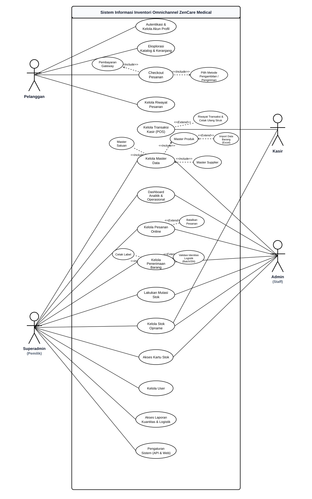
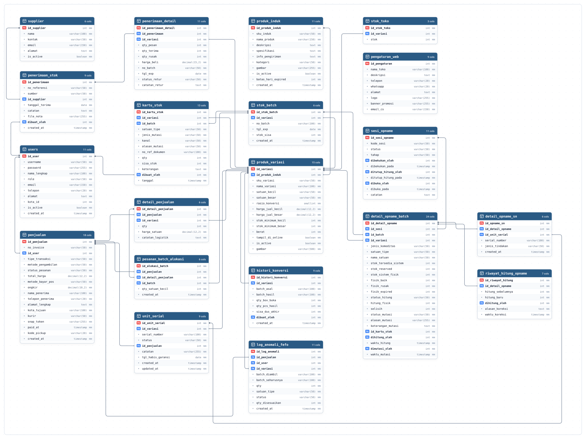

BAB III
ANALISIS DAN PERANCANGAN SISTEM
3.1 Metode Penelitian
Pengembangan Sistem Informasi Inventori Omnichannel pada ZenCare Medical menerapkan metode Rapid Application Development (RAD). Pendekatan ini dipilih karena siklus pengembangannya yang terfokus, relatif singkat, dan bersifat iteratif dengan melibatkan umpan balik langsung dari pihak pengguna. Mengingat ZenCare saat ini masih mengandalkan aplikasi kasir pihak ketiga yang tidak terintegrasi dengan saluran penjualan daring, metode RAD dinilai sangat tepat. Fleksibilitas metode ini memungkinkan penulis untuk melakukan penyesuaian rancangan secara dinamis bersama pengelola toko selama proses transisi menuju arsitektur omnichannel terpusat.
Secara keseluruhan, tahapan metode RAD yang digunakan dalam penelitian ini mencakup empat fase utama, yaitu: Perencanaan Kebutuhan (Requirements Planning), Desain Pengguna (User Design), Konstruksi (Construction), dan Peralihan (Cutover).
- Perencanaan Kebutuhan (Requirements Planning): Mengidentifikasi kendala nyata di lapangan dan merumuskan kebutuhan fungsional sistem melalui observasi serta wawancara langsung bersama pengelola toko.
- Desain Pengguna (User Design): Memodelkan kembali proses bisnis (workflow), merancang sistem dengan Unified Modeling Language (UML), menyusun skema basis data terpusat, dan mendesain purwarupa antarmuka pengguna.
- Konstruksi (Construction): Merealisasikan rancangan ke dalam baris kode program secara modular berbasis PHP dan MySQL, yang disempurnakan secara iteratif berdasarkan evaluasi pengguna.
- Peralihan (Cutover): Menguji sistem secara menyeluruh (Black Box Testing dan User Acceptance Testing), melakukan instalasi modul, pelatihan staf, dan migrasi data persediaan menuju operasional penuh.
Fase Perencanaan Kebutuhan dan Desain Pengguna dibahas secara mendalam pada Bab III ini, sedangkan fase Konstruksi dan Peralihan dipaparkan pada Bab IV.
3.2 Perencanaan Kebutuhan (Requirements Planning)
Fase perencanaan kebutuhan bertujuan memetakan alur kerja nyata di gerai ZenCare Medical, menggali permasalahan operasional harian toko, serta merumuskan kebutuhan fungsional sistem informasi yang akan dibangun. Seluruh proses pengumpulan informasi dilakukan secara langsung di lapangan bersama pemilik toko dan staf yang bertugas.
3.2.1 Pengumpulan Data
Guna memperoleh gambaran kondisi operasional yang faktual di gerai ZenCare Medical, pengumpulan data dilakukan melalui dua teknik utama:
- Wawancara: Penulis berdiskusi langsung dengan pemilik usaha dan petugas kasir di gerai ZenCare Medical, Jl. Muharto No. 57, Malang. Dari wawancara ini, diketahui bahwa permasalahan paling mendesak adalah seringnya terjadi selisih persediaan (overselling). Toko melayani pembeli luring dan daring, namun aplikasi kasir fisik yang digunakan saat ini berjalan secara terpisah (stand-alone) dari saluran penjualan daring. Selain itu, sistem kasir toko belum memiliki pencatatan nomor batch obat, tanggal kedaluwarsa, maupun nomor seri alat kesehatan, sehingga pihak toko kesulitan menelusuri stok yang mendekati kedaluwarsa atau menangani retur barang.
- Observasi: Penulis mengamati langsung rutinitas kasir dalam melayani pembeli di meja kasir, proses penyiapan pesanan dari saluran daring, serta tata cara penerimaan pasokan barang dari distributor. Hasil pengamatan memperlihatkan adanya beban kerja ganda bagi staf toko. Setiap kali ada pesanan masuk dari saluran daring, staf harus mengambil barang dari etalase, menghitung rasio konversi satuan (misalnya dari kemasan Box ke Strip) secara manual menggunakan kalkulator, lalu membuka aplikasi kasir fisik secara terpisah untuk memasukkan angka pengurangan stok. Saat toko sedang ramai melayani pembeli langsung di gerai, pencatatan manual tersebut sering tertunda sehingga stok yang tertera di sistem kasir menjadi tidak sinkron dengan fisik barang di rak.
3.2.2 Analisis Proses Bisnis Berjalan
Berdasarkan data observasi dan wawancara, kelemahan mendasar pada operasional ZenCare Medical terletak pada ketiadaan integrasi data antar saluran penjualan serta belum adanya kendali sistem terhadap atribut logistik medis. Proses bisnis yang saat ini berjalan dipetakan ke dalam dua diagram alur (workflow):
1. Workflow Barang Keluar Lintas Saluran (Berjalan)
Alur penjualan barang keluar pada kondisi berjalan masih berlangsung secara terpisah pada dua saluran berbeda tanpa sinkronisasi pangkalan data terpusat, sebagaimana ditunjukkan pada Gambar 3.1:
Gambar 3.1 Workflow Barang Keluar (Berjalan)
- Jalur Toko Fisik (Luring): Pembeli datang langsung ke toko dan menyebutkan obat atau alat kesehatan yang diinginkan kepada petugas kasir. Kasir mengambilkan fisik barang dari rak etalase, menerima pembayaran tunai atau transfer dari pembeli, lalu menginput transaksi ke dalam aplikasi kasir toko pihak ketiga. Aplikasi kasir tersebut secara otomatis memotong stok hanya pada pangkalan data lokal di mesin kasir toko, tanpa terhubung ke saluran penjualan lainnya.
- Jalur Penjualan Daring (Pihak Ketiga): Pembeli melakukan pemesanan produk grosir melalui platform marketplace eksternal. Staf toko menerima pemberitahuan pesanan, lalu mengambil dan mengemas fisik barang dari rak penyimpanan. Karena sistem pesanan daring tidak terhubung dengan mesin kasir fisik toko, staf toko harus menghitung rasio konversi satuan barang (misalnya dari kemasan Box ke Strip) secara manual menggunakan kalkulator. Setelah itu, staf toko membuka aplikasi kasir fisik secara terpisah untuk memasukkan angka pengurangan stok. Prosedur pencatatan ganda ini membutuhkan waktu tambahan dan rawan kesalahan hitung. Keterlambatan pengurangan stok di mesin kasir kerap mengakibatkan barang yang sudah dikemas untuk pembeli daring masih terbaca tersedia di kasir, sehingga berisiko terjual kembali kepada pembeli langsung di toko (overselling).
2. Workflow Barang Masuk (Berjalan)
Alur pengadaan hingga penerimaan pasokan barang dari distributor pada kondisi berjalan masih dilakukan secara konvensional tanpa adanya pemantauan batas minimum stok otomatis dan tanpa pencatatan identitas medis barang, sebagaimana ditunjukkan pada Gambar 3.2:
Gambar 3.2 Workflow Barang Masuk (Berjalan)
- Fase Pengadaan Barang: Keputusan memesan barang baru didasarkan pada pemeriksaan visual secara manual oleh staf toko saat melihat persediaan di rak etalase mulai menipis, bukan dari peringatan otomatis sistem. Berdasarkan perkiraan tersebut, staf toko memilih jalur pengadaan: (1) membuat surat pemesanan (Purchase Order / PO) manual ke distributor resmi lalu menunggu jadwal pengiriman barang, atau (2) membeli langsung secara tunai ke distributor pemasok rekanan dan membawa barang secara mandiri ke toko.
- Fase Penerimaan dan Penyimpanan: Ketika barang fisik tiba di toko bersama faktur atau nota pembelian, staf mencocokkan jumlah kemasan fisik dengan data pada lembar faktur. Jika kuantitas sudah sesuai, staf membuka aplikasi kasir toko dan menginput total angka barang masuk. Pada aplikasi kasir lama, tidak tersedia kolom pencatatan Nomor Batch dan Tanggal Kedaluwarsa (Expiration Date) untuk obat, maupun Nomor Seri (Serial Number) untuk alat kesehatan. Selanjutnya, barang langsung ditata ke rak etalase secara acak tanpa memperhatikan urutan kedaluwarsa. Kelemahan ini menyebabkan obat dengan masa kedaluwarsa yang lebih pendek berisiko tertumpuk di belakang barang baru, serta menyulitkan penelusuran identitas barang jika ada klaim kerusakan atau penarikan produk medis dari distributor.
3.3 Desain Pengguna (User Design)
Berdasarkan temuan kendala operasional pada fase sebelumnya, tahap desain pengguna difokuskan untuk merancang ulang proses bisnis dan struktur sistem usulan. Perancangan ini mencakup pemodelan alur kerja terintegrasi (workflow), arsitektur peta situs (sitemap), pemodelan fungsional menggunakan Unified Modeling Language (UML), serta perancangan pangkalan data terpusat. Tujuannya adalah membangun sistem informasi inventori yang mampu menyinkronkan data stok lintas saluran secara seketika, mengotomatisasi konversi satuan multi-UOM, serta menerapkan pengendalian logistik medis berbasis metode First Expired, First Out (FEFO).
3.3.1 Workflow Sistem Usulan
Sistem usulan dirancang untuk menghubungkan transaksi penjualan luring (POS) dan pesanan daring (E-Commerce) ke dalam satu basis data terpusat. Rekayasa ulang alur kerja operasional barang keluar dan barang masuk dijabarkan sebagai berikut:
1. Workflow Barang Keluar Terintegrasi (Sistem Usulan)
Alur barang keluar pada sistem usulan mengintegrasikan penjualan di meja kasir fisik dan pemesanan mandiri pembeli daring. Melalui integrasi ini, pemotongan stok dilakukan secara terpusat sehingga mengeliminasi proses konversi manual dan mencegah terjadinya selisih stok (overselling), sebagaimana diuraikan pada Gambar 3.3:
Gambar 3.3 Workflow Barang Keluar (Sistem Usulan)
- Inisiasi Transaksi dan Batasan Kemasan Penjualan: Transaksi penjualan bermula dari dua saluran yang memiliki karakteristik berbeda. Pada Jalur Kasir Toko Fisik (POS), kasir melayani pembeli langsung di toko dengan dukungan multi-satuan (Dual-UOM). Kasir dapat menjual dalam kemasan eceran (Strip/Botol) maupun grosir (Box). Apabila stok eceran di rak habis, kasir cukup menekan tombol "Bongkar Box" pada antarmuka kasir; sistem secara otomatis memotong 1 Box dan menambah saldo eceran sesuai rasio konversi yang tercatat tanpa perlu membuka menu terpisah. Pada Jalur E-Commerce Mandiri, pembeli daring hanya dapat membeli komoditas dalam kemasan Satuan Besar (Grosir/Box utuh) yang bersegel resmi pabrik demi menjaga higienitas dan standar distribusi medis. Pembeli memilih cara penerimaan barang—apakah menggunakan kurir ekspedisi atau mengambil sendiri di toko (Pick-up in Store)—kemudian menyelesaikan pembayaran via gerbang pembayaran (Payment Gateway).
- Mekanisme Batas Waktu Pembayaran (Reservasi Stok 2 Jam): Ketika pembeli daring telah melakukan pemesanan namun belum menyelesaikan pembayaran (status pesanan Menunggu Pembayaran), sistem mengunci kuantitas barang yang dipesan sebagai stok cadangan (Reserved Stock) dengan batas waktu maksimal 2 (dua) jam. Jika dalam kurun waktu 2 jam pembayaran tidak diselesaikan, sistem secara otomatis membatalkan pesanan dan mengembalikan stok ke etalase toko. Fitur ini melindungi stok fisik gerai agar tidak tertahan oleh pesanan daring yang tidak terselesaikan, sekaligus mencegah pembeli di toko fisik kehabisan barang akibat data stok semu.
-
Alokasi Logistik Medis dan Validasi Fisik: Setelah pembayaran pesanan
terkonfirmasi, sistem menyaring kategori produk secara otomatis:
- Untuk kategori Obat, sistem menerapkan aturan First Expired, First Out (FEFO) dengan mengalokasikan nomor batch yang memiliki tanggal kedaluwarsa paling dekat.
- Untuk kategori Alat Kesehatan, sistem mengalokasikan nomor seri unit (Serial Number) yang unik.
- Pemotongan Stok pada Jalur Toko Fisik (POS): Pada transaksi luring di meja kasir, pengurangan saldo stok pangkalan data dieksekusi seketika saat kasir menerima pembayaran dan menekan tombol cetak struk belanja. Bersamaan dengan itu, sistem mencatatkan mutasi keluar pada riwayat buku besar Kartu Stok (Stock Ledger) dan kasir menyerahkan barang belanjaan kepada pembeli.
- Pemotongan Stok Jalur Daring - Metode Ambil di Toko (Pick-up in Store): Untuk pesanan daring yang memilih opsi ambil di gerai, staf toko menyiapkan barang sesuai instruksi batch FEFO atau nomor seri, lalu memperbarui status pesanan menjadi "Siap Diambil". Pemotongan kuantitas persediaan dan pencatatan mutasi keluar pada Kartu Stok baru dilakukan oleh sistem saat pelanggan tiba di toko dan staf memverifikasi kode unik pesanan pelanggan di sistem, yang ditandai dengan perubahan status pesanan menjadi "Selesai".
- Pemotongan Stok Jalur Daring - Metode Pengiriman Kurir: Untuk pesanan daring dengan pengiriman ekspedisi, staf mengemas produk fisik yang telah divalidasi pemindai barcode, mencetak label pengiriman thermal, dan menyerahkan paket ke pihak kurir. Pemotongan kuantitas stok di pangkalan data serta pencatatan mutasi keluar pada Kartu Stok dieksekusi saat staf menginput nomor resi pengiriman ke dalam sistem, yang secara otomatis mengubah status pesanan menjadi "Dikirim".
2. Workflow Barang Masuk & Logistik (Sistem Usulan)
Alur penerimaan barang pada sistem usulan dirancang agar sistem berfungsi sebagai penyaring (gatekeeper) logistik. Sistem mewajibkan penginputan atribut medis secara lengkap sebelum data persediaan dapat disimpan ke dalam pangkalan data, sebagaimana ditunjukkan pada Gambar 3.4:
Gambar 3.4 Workflow Barang Masuk (Sistem Usulan)
- Inisiasi Pengadaan Berdasarkan Batas Minimum Persediaan: Pengadaan barang dipicu oleh peringatan otomatis sistem saat saldo persediaan menyentuh ambang batas minimum persediaan (safety stock atau Reorder Point / ROP). Berdasarkan notifikasi tersebut, staf toko memproses pengadaan, baik melalui penerbitan dokumen Purchase Order (PO) resmi ke distributor atau pembelian langsung ke distributor rekanan resmi. Ketika kiriman barang fisik tiba bersama faktur atau surat jalan, staf memeriksa keutuhan segel kemasan dan mencocokkan jumlah fisik barang.
-
Penyaringan Logistik Medis (Gatekeeper) dan Registrasi Stok: Staf membuka menu
Penerimaan Barang pada sistem web usulan, lalu menginput nomor faktur, nama distributor,
jumlah barang yang diterima, dan harga beli. Selanjutnya, sistem menerapkan validasi
wajib berdasarkan kelompok produk:
- Untuk produk Obat, staf wajib menginput Nomor Batch dan Tanggal Kedaluwarsa.
- Untuk produk Alat Kesehatan, staf wajib menginput Nomor Seri (Serial Number) unik untuk setiap unit fisik.
- Pembaruan Saldo, Kartu Stok, dan Penataan Rak Berbasis FEFO: Setelah seluruh isian data dinyatakan lengkap dan valid, sistem menyimpan data ke pangkalan data, menambah saldo persediaan fisik, membukukan mutasi masuk pada buku besar Kartu Stok (Stock Ledger), serta mencetak stiker label barcode logistik. Label barcode tersebut ditempelkan pada fisik kemasan dus barang sebelum barang ditata rapi di rak etalase sesuai urutan tanggal kedaluwarsa terdekat (FEFO).
3.3.2 Sitemap (Peta Situs)
Perancangan sitemap (peta situs) bertujuan untuk memetakan arsitektur informasi, hierarki menu, dan ruang lingkup antarmuka pengguna pada Sistem Informasi Inventori Omnichannel ZenCare Medical. Melalui pemetaan terstruktur ini, alur navigasi bagi setiap pengguna dapat digambarkan secara komprehensif sesuai dengan batasan wewenang dan fungsi operasional masing-masing. Berdasarkan pembagian peran (role) pada arsitektur sistem dan pangkalan data, peta situs dikelompokkan ke dalam 4 (empat) entitas pengguna utama:
1. Sitemap Pelanggan (Front-End E-Commerce)
Struktur peta situs ini memetakan antarmuka mandiri yang diakses secara langsung oleh pembeli daring melalui portal web e-commerce, sebagaimana ditunjukkan pada Gambar 3.5. Alur navigasi ini mencakup 6 (enam) komponen utama:
ZenCare Medical (Pelanggan)"] --> P1["Autentikasi"] Pelanggan --> P2["Beranda"] Pelanggan --> P3["Katalog Produk"] Pelanggan --> P4["Keranjang Belanja"] Pelanggan --> P5["Checkout"] Pelanggan --> P6["Akun Saya"] P1 --> P1_1["Daftar Akun Baru"] P1 --> P1_2["Login"] P1 --> P1_3["Lupa Kata Sandi"] P3 --> P3_1["Detail Produk"] P4 --> P4_1["Ubah Kuantitas Produk"] P4 --> P4_2["Hapus Produk dari Keranjang"] P4 --> P4_3["Ringkasan Subtotal"] P5 --> P5_1["Pilih Metode Pengambilan"] P5 --> P5_2["Isi / Pilih Alamat Pengiriman"] P5 --> P5_3["Ringkasan Pesanan & Total Bayar"] P5 --> P5_4["Pembayaran"] P6 --> P6_1["Edit Profil"] P6 --> P6_2["Kelola Alamat Pengiriman"] P6 --> P6_3["Riwayat Pesanan"] style Pelanggan fill:#ffffff,stroke:#000000,stroke-width:1.5px,color:#000000,font-weight:bold style P1 fill:#ffffff,stroke:#000000,stroke-width:1.5px,color:#000000,font-weight:bold style P2 fill:#ffffff,stroke:#000000,stroke-width:1.5px,color:#000000,font-weight:bold style P3 fill:#ffffff,stroke:#000000,stroke-width:1.5px,color:#000000,font-weight:bold style P4 fill:#ffffff,stroke:#000000,stroke-width:1.5px,color:#000000,font-weight:bold style P5 fill:#ffffff,stroke:#000000,stroke-width:1.5px,color:#000000,font-weight:bold style P6 fill:#ffffff,stroke:#000000,stroke-width:1.5px,color:#000000,font-weight:bold
Gambar 3.5 Sitemap Pelanggan (Front-End E-Commerce)
- Autentikasi: Merupakan titik masuk dan pusat kendali akses akun pengguna yang mencakup antarmuka pendaftaran akun baru, masuk sistem (login), dan pemulihan akun (lupa kata sandi).
- Beranda: Halaman pembuka yang menyajikan informasi profil toko, promosi komoditas medis, serta panduan alur pemesanan obat dan alat kesehatan daring secara ringkas.
- Katalog Produk: Berfungsi sebagai etalase digital yang bebas diakses publik tanpa keharusan login, menampung pencarian produk dan filter kategori, serta bermuara pada antarmuka Detail Produk yang menampilkan spesifikasi medis, indikasi, dan ketersediaan stok fisik satuan besar utuh secara real-time.
- Keranjang Belanja: Memfasilitasi pembeli dalam mengelola daftar barang belanjaan sebelum diproses lebih lanjut, mencakup penyesuaian kuantitas produk kemasan satuan besar, penghapusan produk dari daftar keranjang, serta pemantauan kalkulasi ringkasan subtotal sementara secara otomatis.
- Checkout: Memfasilitasi alur penyelesaian transaksi daring yang mencakup pemilihan metode pengambilan pesanan (opsi Pengiriman Kurir Ekspedisi atau Ambil di Toko / Pick-up in Store), formulir pengisian atau penentuan alamat pengiriman (khusus kurir), peninjauan ringkasan pesanan beserta total biaya akhir, hingga penyelesaian pembayaran melalui gerbang pembayaran pihak ketiga (Payment Gateway).
- Akun Saya: Pusat kendali profil pelanggan terdaftar yang memuat fasilitas pembaruan biodata (Edit Profil), pengelolaan buku alamat tujuan pengiriman, serta direktori pelacakan Riwayat Pesanan lintas status yang dilengkapi dengan fitur pembatalan mandiri untuk pesanan belum bayar dan pengunduhan faktur transaksi.
2. Sitemap Kasir (Terminal POS Toko Fisik)
Struktur peta situs ini memetakan antarmuka terminal kasir gerai fisik yang dirancang khusus untuk kecepatan transaksi luring (walk-in customer) dan kepatuhan alokasi logistik medis di meja kasir, sebagaimana ditunjukkan pada Gambar 3.6. Alur navigasi ini mencakup 2 (dua) komponen utama:
ZenCare Medical (Kasir)"] --> K1["Autentikasi"] Kasir --> K2["Terminal Kasir (POS)"] K1 --> K1_1["Login Kasir"] K1 --> K1_2["Logout"] K2 --> K2_1["Pencarian & Scan Barcode"] K2 --> K2_2["Transaksi Dual-UOM & Bongkar Box"] K2 --> K2_3["Rekomendasi FEFO Obat & Validasi SN Alkes"] K2 --> K2_4["Panel Deviasi Anomali FEFO"] K2 --> K2_5["Pembayaran & Cetak Struk Belanja"] K2 --> K2_6["Riwayat Transaksi & Cetak Ulang Struk"] K2 --> K2_7["Indikator Status Freeze Mode"] style Kasir fill:#ffffff,stroke:#000000,stroke-width:1.5px,color:#000000,font-weight:bold style K1 fill:#ffffff,stroke:#000000,stroke-width:1.5px,color:#000000,font-weight:bold style K2 fill:#ffffff,stroke:#000000,stroke-width:1.5px,color:#000000,font-weight:bold
Gambar 3.6 Sitemap Kasir (Terminal POS Offline)
- Autentikasi: Gerbang verifikasi masuk petugas kasir untuk memulai sesi operasional penjualan toko serta fasilitas keluar sistem (logout). Pengguna dengan peran kasir langsung diarahkan secara otomatis ke antarmuka terminal POS setelah autentikasi berhasil.
- Terminal Kasir (POS): Antarmuka terpadu pelayanan transaksi langsung di gerai fisik. Modul ini memuat pencarian nama produk dan pemindaian barcode kemasan, dukungan fleksibilitas multi-satuan (Dual-UOM) dengan tombol konversi otomatis Bongkar Box saat stok eceran di rak habis, penyajian rekomendasi nomor batch obat terdekat (FEFO) dan validasi nomor seri unik alat kesehatan, panel pencatatan deviasi anomali apabila kasir mengambil batch di luar rekomendasi, modal penyelesaian pembayaran (tunai atau non-tunai) yang langsung memicu pencetakan struk belanja, modal riwayat transaksi harian kasir bersifat read-only untuk keperluan pencetakan ulang struk belanja (reprint receipt) darurat serta rekonsiliasi penutupan shift kasir, serta indikator pembekuan transaksi otomatis (Freeze Mode) ketika sesi stok opname sedang berlangsung. Kasir tidak diberikan wewenang pembatalan transaksi (void) atau manipulasi data penjualan; tata kelola pembatalan dan retur pesanan dipusatkan secara terkendali pada menu pesanan omnichannel di bawah wewenang Admin dan Superadmin.
3. Sitemap Admin Toko (Back-Office Operasional & Logistik)
Struktur peta situs ini memetakan antarmuka sistem back-office staf toko yang bertugas mengelola pergerakan stok, pemenuhan pesanan e-commerce, penerimaan logistik, dan mutasi persediaan, sebagaimana ditunjukkan pada Gambar 3.7. Modul ini terbagi menjadi 5 (lima) area operasional ringkas:
ZenCare Medical (Admin Toko)"] --> A1["Autentikasi"] Admin --> A2["Dashboard Operasional"] Admin --> A3["Master Data"] Admin --> A4["Manajemen Pesanan Omnichannel"] Admin --> A5["Logistik & Inventori"] A1 --> A1_1["Login Admin"] A1 --> A1_2["Logout"] A2 --> A2_1["Ringkasan Persediaan (Stok Besar, Kecil, ROP, ED)"] A2 --> A2_2["Antrean Pesanan (Daring & Pick-up)"] A2 --> A2_3["Monitoring Logistik (Anomali FEFO & Retur)"] A2 --> A2_4["Ringkasan Transaksi Harian & Kartu Stok"] A3 --> A3_1["Data Produk (Katalog, Tambah, Nonaktifkan)"] A3 --> A3_2["Data Satuan & Multi-UOM"] A3 --> A3_3["Direktori Supplier Rekanan"] A4 --> A4_1["Antrean Pesanan Daring & Pick-up"] A4 --> A4_2["Instruksi Ambil Fisik (FEFO/SN) & Scan Barcode"] A4 --> A4_3["Cetak Label Pengiriman & Faktur Penjualan"] A4 --> A4_4["Pemrosesan Kurir (Resi) & Verifikasi Pick-up"] A4 --> A4_5["Pembatalan Pesanan & Konfirmasi Refund"] A5 --> A5_1["Penerimaan Barang (Batch, ED, SN, Retur, & Barcode)"] A5 --> A5_2["Konversi Satuan UOM & Mutasi Stok Manual"] A5 --> A5_3["Pelaksanaan Pencacahan Stok Opname"] A5 --> A5_4["Buku Kartu Stok & Monitoring Logistik Medis"] style Admin fill:#ffffff,stroke:#000000,stroke-width:1.5px,color:#000000,font-weight:bold style A1 fill:#ffffff,stroke:#000000,stroke-width:1.5px,color:#000000,font-weight:bold style A2 fill:#ffffff,stroke:#000000,stroke-width:1.5px,color:#000000,font-weight:bold style A3 fill:#ffffff,stroke:#000000,stroke-width:1.5px,color:#000000,font-weight:bold style A4 fill:#ffffff,stroke:#000000,stroke-width:1.5px,color:#000000,font-weight:bold style A5 fill:#ffffff,stroke:#000000,stroke-width:1.5px,color:#000000,font-weight:bold
Gambar 3.7 Sitemap Admin Toko (Back-Office & Logistik)
- Autentikasi: Titik masuk staf operasional dengan verifikasi kredensial serta fasilitas keluar sistem (logout).
- Dashboard Operasional: Panel pemantauan terpadu aktivitas harian yang menampilkan 4 (empat) ringkasan taktis: pemantauan tingkat persediaan (akumulasi stok besar, kecil, peringatan batas kritis ROP, dan obat mendekati kedaluwarsa), antrean pesanan masuk lintas jalur pemesanan (daring kurir dan pick-up), monitoring anomali deviasi FEFO kasir beserta status klaim retur logistik, serta ringkasan volume transaksi harian dan log mutasi kartu stok terkini.
- Master Data: Pusat pengelolaan entitas dasar operasional yang mencakup katalog produk (pendaftaran produk baru, pengaturan batas minimum ROP, dan penonaktifan produk), pengelolaan data satuan multi-satuan (Multi-UOM) untuk memetakan hierarki kemasan besar ke eceran, serta direktori data supplier rekanan pengadaan barang.
- Manajemen Pesanan Omnichannel: Pusat pengelolaan pemenuhan pesanan daring toko yang mencakup pemantauan antrean pesanan masuk lintas jalur, lembar instruksi pengambilan fisik barang sesuai aturan FEFO dan nomor seri alkes yang divalidasi pemindaian barcode, pencetakan label pengiriman dan faktur penjualan, pemrosesan pengiriman melalui kurir (input resi) serta verifikasi kode pengambilan di toko (pick-up), hingga pembatalan pesanan dan konfirmasi pengembalian dana (refund).
- Logistik & Inventori: Pusat kendali fisik barang masuk dan keluar gudang yang terbagi menjadi penerimaan barang dari pemasok dengan validasi ketat identitas medis (Batch, ED, Serial Number, retur barang cacat, dan pencetakan stiker barcode), modul konversi satuan kemasan dus ke eceran beserta mutasi stok penyesuaian manual (barang rusak/garansi), pencatatan lembar cacah fisik saat sesi stok opname berlangsung, serta monitoring ketersediaan buku Kartu Stok terpisah dan direktori logistik medis.
4. Sitemap Superadmin (Pemilik / Manajerial)
Struktur peta situs ini memetakan kendali tertinggi dalam sistem yang dipegang langsung oleh pemilik usaha (owner) untuk pengawasan strategis pergerakan kuantitas fisik, kebijakan operasional, kepatuhan audit persediaan medis, dan tata kelola sistem, sebagaimana ditunjukkan pada Gambar 3.8. Modul ini dirancang ke dalam 6 (enam) kelompok manajerial ringkas:
ZenCare Medical (Superadmin)"] --> S1["Autentikasi"] Superadmin --> S2["Dashboard Manajerial Eksekutif"] Superadmin --> S3["Manajemen Pengguna"] Superadmin --> S4["Otorisasi Master Data & Supervisi"] Superadmin --> S5["Modul Pelaporan Kuantitas & Logistik"] Superadmin --> S6["Pengaturan Sistem"] S1 --> S1_1["Login Superadmin"] S1 --> S1_2["Logout"] S2 --> S2_1["Analitik Penjualan (Volume POS & Daring, Tren, Top 5)"] S2 --> S2_2["Ringkasan Metrik Inventori & Monitoring Logistik"] S2 --> S2_3["Audit Aktivitas Pengadaan, Mutasi, & Kartu Stok"] S2 --> S2_4["Status Freeze Lock Sesi Stok Opname"] S3 --> S3_1["Kelola Akun Staf (Admin & Kasir)"] S3 --> S3_2["Pengaturan Peran, Hak Akses, & Reset Kata Sandi"] S4 --> S4_1["Penetapan Harga Jual, Multi-UOM, & Import Excel"] S4 --> S4_2["Tata Kelola Sesi Freeze Stok Opname & Berita Acara"] S4 --> S4_3["Supervisi Operasional Transaksi POS & Daring"] S5 --> S5_1["Laporan Penjualan Omnichannel (POS vs Daring)"] S5 --> S5_2["Laporan Persediaan & Kartu Stok Fisik"] S5 --> S5_3["Laporan Logistik Medis & Audit Deviasi FEFO"] S5 --> S5_4["Laporan Riwayat Penerimaan, Mutasi, & Konversi UOM"] S6 --> S6_1["Konfigurasi API Payment Gateway & Ekspedisi"] S6 --> S6_2["Pengaturan Profil Usaha & Banner Beranda"] S6 --> S6_3["Pintasan Akses Toko E-Commerce Publik"] style Superadmin fill:#ffffff,stroke:#000000,stroke-width:1.5px,color:#000000,font-weight:bold style S1 fill:#ffffff,stroke:#000000,stroke-width:1.5px,color:#000000,font-weight:bold style S2 fill:#ffffff,stroke:#000000,stroke-width:1.5px,color:#000000,font-weight:bold style S3 fill:#ffffff,stroke:#000000,stroke-width:1.5px,color:#000000,font-weight:bold style S4 fill:#ffffff,stroke:#000000,stroke-width:1.5px,color:#000000,font-weight:bold style S5 fill:#ffffff,stroke:#000000,stroke-width:1.5px,color:#000000,font-weight:bold style S6 fill:#ffffff,stroke:#000000,stroke-width:1.5px,color:#000000,font-weight:bold
Gambar 3.8 Sitemap Superadmin (Pemilik / Manajerial)
- Autentikasi: Akses masuk khusus pemilik sistem dengan verifikasi terenkripsi untuk membuka hak akses penuh dan fasilitas keluar sistem (logout).
- Dashboard Manajerial Eksekutif: Panel visualisasi analitik terpadu berbasis kuantitas fisik (bebas distorsi finansial) yang mencakup evaluasi volume penjualan (POS vs daring, grafik tren 7 hari, dan 5 produk terlaris), ringkasan metrik inventori fisik (SKU, stok besar, kecil, ROP, dan obat mendekati kedaluwarsa) beserta monitoring logistik, rekam audit pengadaan barang masuk dan log kartu stok terkini, serta indikator status penguncian transaksi (Freeze Lock) sesi stok opname.
- Manajemen Pengguna: Modul eksklusif pemilik untuk mendaftarkan akun staf baru (Admin maupun Kasir), membatasi hak akses sistem melalui prinsip Role-Based Access Control (RBAC), mereset kata sandi staf, serta menonaktifkan status akun staf.
- Otorisasi Master Data & Supervisi: Pengendalian kebijakan sistem yang mencakup penetapan harga jual resmi produk, rasio konversi kemasan Multi-UOM, impor masal pangkalan data persediaan melalui berkas lembar kerja (Excel), pembukaan dan penutupan sesi Stok Opname (pengendalian Freeze Lock, rekonsiliasi selisih stok fisik, dan pengesahan Berita Acara Stok Opname bertandatangan), serta supervisi langsung terhadap operasional kasir POS dan pemenuhan pesanan e-commerce.
- Modul Pelaporan Kuantitas & Logistik: Direktori laporan manajerial terpusat yang berfokus ketat pada audit pergerakan kuantitas fisik dan kepatuhan medis tanpa variabel akuntansi keuangan, meliputi Laporan Penjualan Omnichannel (komparasi volume fisik kasir POS vs pesanan daring), Laporan Ketersediaan Persediaan & Kartu Stok Fisik, Laporan Logistik Medis & Audit Deviasi FEFO, serta Laporan Riwayat Penerimaan, Mutasi Penyesuaian, dan Konversi UOM.
- Pengaturan Sistem: Pusat konfigurasi infrastruktur teknologi informasi yang mencakup pengelolaan kredensial API pihak ketiga (gerbang pembayaran Midtrans dan pelacakan kurir RajaOngkir), pengaturan identitas toko dan banner beranda e-commerce, serta tombol pintas peninjauan tampilan toko publik.
3.3.3 Use Case Diagram
Use case diagram merupakan pemodelan visual dalam Unified Modeling Language (UML) yang merepresentasikan interaksi fungsional antara aktor pengguna dengan sistem perangkat lunak yang dirancang. Diagram ini memetakan batasan sistem (system boundary), ruang lingkup wewenang pengguna berdasarkan prinsip Role-Based Access Control (RBAC), serta relasi ketergantungan antar-fungsi melalui relasi <<include>> (keharusan eksekusi) dan <<extend>> (perluasan alur bersyarat). Berdasarkan pemisahan tugas operasional pada ZenCare Medical, sistem membagi hak akses ke dalam 4 (empat) entitas aktor, yaitu Pelanggan, Kasir, Admin Toko, dan Superadmin, sebagaimana divisualisasikan pada Gambar 3.9.

Gambar 3.9 Use Case Diagram Sistem Informasi Inventori Omnichannel ZenCare Medical
Deskripsi peran, ruang lingkup tanggung jawab, serta rincian fungsi yang dapat diakses oleh masing-masing aktor pada sistem dijabarkan sebagai berikut:
-
Actor: Pelanggan
Bertindak sebagai pengguna eksternal yang mengakses sistem secara mandiri melalui antarmuka web front-end e-commerce. Aktor ini berinteraksi dengan sistem untuk kebutuhan pengadaan obat dan alat kesehatan kemasan grosir satuan besar utuh bersegel resmi pabrik tanpa keterlibatan langsung staf toko pada tahap pemesanan awal, dengan wewenang fungsional yang meliputi:
- Autentikasi & Kelola Akun Profil: Melakukan registrasi akun pembeli baru, mengelola identitas profil personal, mengubah kata sandi, serta mengatur buku alamat tujuan pengiriman secara mandiri.
- Eksplorasi Katalog & Keranjang: Menjelajahi daftar katalog komoditas medis, menyaring produk berdasarkan kategori (Obat atau Alat Kesehatan), melihat rincian spesifikasi medis, memantau ketersediaan stok fisik secara real-time, serta memasukkan produk ke keranjang belanja digital dalam kemasan satuan besar (seperti Box atau Dus).
- Checkout Pesanan: Menyelesaikan alur pemesanan barang yang di dalamnya mewajibkan pengguna untuk memilih metode pengambilan pesanan (berupa opsi Pengiriman Kurir Ekspedisi atau Ambil di Toko / Pick-up in Store) melalui relasi <<include>>, serta menyelesaikan pembayaran melalui gerbang pembayaran pihak ketiga (Payment Gateway Midtrans) secara otomatis melalui relasi <<include>> dengan batas waktu pelunasan 2 jam.
- Kelola Riwayat Pesanan: Melacak tahapan perkembangan status pesanan (mulai dari Menunggu Pembayaran, Diproses, Dikirim / Siap Diambil, hingga Selesai), mengunduh faktur penjualan digital, serta melakukan pembatalan pesanan secara mandiri khusus untuk pesanan yang belum diselesaikan pembayarannya.
-
Actor: Kasir
Bertindak sebagai staf operasional garda depan (front-office) di gerai fisik yang bertugas melayani transaksi pembelian tatap muka langsung (walk-in customer) di meja kasir toko, dengan fungsi dan wewenang yang mencakup:
- Kelola Transaksi Kasir (POS): Mengeksekusi pencatatan arus barang keluar di meja kasir melalui antarmuka terminal POS tunggal terpadu. Fitur ini memfasilitasi pencarian cepat dan pemindaian barcode fisik kemasan, pemilihan fleksibilitas multi-satuan (Dual-UOM: eceran Strip/Botol vs grosir Box), tombol konversi instan Bongkar Box saat eceran di rak habis, penyajian rekomendasi nomor batch obat terdekat sesuai prinsip FEFO dan validasi nomor seri unik alat kesehatan, pencatatan otomatis deviasi anomali apabila kasir mengambil batch di luar rekomendasi sistem, pemrosesan pembayaran tunai maupun non-tunai (QRIS), serta penerbitan dan pencetakan struk belanja seketika saat transaksi berhasil diselesaikan.
- Riwayat Transaksi & Cetak Ulang Struk: Mengakses direktori transaksi kasir harian (shift aktif) yang bersifat read-only melalui relasi <<extend>>. Fitur ini dirancang khusus untuk memfasilitasi pencetakan ulang struk nota belanja (reprint receipt) saat mesin pencetak mengalami gangguan kertas macet atau pelanggan meminta salinan nota, serta membantu kasir melakukan rekonsiliasi pencocokan uang fisik di laci kasir (cash drawer) pada saat penutupan shift (closing shift). Petugas kasir tidak diberikan wewenang untuk membatalkan transaksi (void), mengubah nilai harga, atau mengedit data persediaan secara manual guna mencegah potensi kecurangan kas.
-
Actor: Admin Toko (Staff Operasional & Logistik)
Bertindak sebagai staf operasional back-office dan logistik gudang yang bertanggung jawab menjaga keteraturan tata kelola persediaan fisik, pemenuhan pesanan lintas saluran (omnichannel), serta penerimaan pasokan barang masuk dari distributor, dengan lingkup fungsional meliputi:
- Dashboard Analitik & Operasional: Memantau indikator operasional taktis harian secara terpadu, seperti peringatan ketersediaan stok kritis berbasis Reorder Point (ROP), pemantauan tanggal kedaluwarsa obat mendekati batas toleransi, daftar antrean pesanan baru, serta log monitoring anomali FEFO kasir dan klaim retur barang ke pemasok.
- Kelola Master Data: Bertugas menginput dan memelihara keabsahan entitas dasar pangkalan data persediaan yang mencakup pendaftaran Data Produk baru, penonaktifan katalog produk (soft-delete), pemetaan Data Satuan (Multi-UOM), serta pengelolaan direktori Data Supplier rekanan pengadaan barang melalui relasi <<include>>. Hak akses pengubahan parameter finansial sensitif seperti nominal harga jual dan rasio konversi unit dibatasi secara eksklusif hanya untuk wewenang Superadmin.
- Kelola Pesanan Online: Memvalidasi antrean pesanan yang masuk melalui e-commerce, mencetak lembar instruksi pengambilan fisik barang di rak gudang (picking list) berpanduan FEFO dan nomor seri alkes, mencetak label pengiriman dan faktur penjualan, menginput nomor resi pengiriman kurir eksternal, memverifikasi kode unik pengambilan barang bagi pembeli metode Pick-up in Store, serta mengeksekusi pembatalan pesanan secara manual (Batalkan Pesanan & Refund) apabila pembeli tidak kunjung mengambil barang di toko melalui relasi <<extend>>.
- Kelola Penerimaan Barang: Menginput dokumen logistik pasokan baru dari distributor rekanan yang mewajibkan verifikasi ketat identitas medis melalui opsi Validasi Identitas Logistik (Batch/SN) melalui relasi <<extend>>, mencatat klaim retur fisik saat ditemukan kemasan cacat dari pabrik, serta mencetak stiker barcode logistik penerimaan melalui relasi <<include>> untuk ditempelkan pada fisik kemasan dus sebelum disimpan di rak persediaan.
- Lakukan Mutasi Stok: Mengeksekusi penyesuaian fisik persediaan secara manual dan pencatatan histori konversi satuan kemasan dus ke eceran, serta mengakomodasi pencatatan barang rusak di rak, obat kedaluwarsa, atau klaim garansi alat kesehatan berkala.
- Kelola Stok Opname: Melaksanakan proses penghitungan dan pencacahan fisik persediaan di etalase dan rak penyimpanan (blind count) selama sesi stok opname aktif tanpa melihat angka kuantitas buku sistem guna menjamin integritas dan objektivitas verifikasi data persediaan.
- Akses Kartu Stok: Memeriksa buku besar kartu stok (stock ledger) per produk yang memisahkan mutasi satuan besar dan kecil secara independen, guna memastikan transparansi riwayat keluar-masuk barang dan kecocokan fisik di etalase maupun gudang.
-
Actor: Superadmin (Pemilik / Manajerial)
Merupakan pemegang entitas manajerial dan kendali wewenang tertinggi dalam sistem. Superadmin bertindak sebagai penentu kebijakan strategis usaha, pengawas keabsahan audit standar peredaran obat dan alat kesehatan, serta administrator infrastruktur teknologi informasi. Selain memiliki hak supervisi dan intervensi atas seluruh modul operasional Admin dan terminal kasir POS, Superadmin memiliki hak akses eksklusif pada fungsi-fungsi berikut:
- Kelola User (Admin & Kasir): Melakukan tata kelola administrasi sumber daya manusia internal toko, meliputi pendaftaran akun pengguna staf baru, penentuan pembagian peran berbasis hak akses (Role-Based Access Control / RBAC), pengaturan ulang (reset) kata sandi staf yang lupa, hingga penonaktifan akun staf yang telah berhenti bekerja.
- Otorisasi Master Data & Kebijakan: Memiliki wewenang mutlak dalam penetapan kebijakan harga jual produk (baik harga eceran kasir maupun harga grosir daring), penentuan nilai rasio konversi satuan kemasan pada Multi-UOM, serta pelaksanaan impor masal data produk baru dari lembar kerja Excel melalui relasi <<extend>>.
- Kelola Stok Opname: Memegang kendali manajerial mutlak dalam pembukaan sesi stok opname yang secara otomatis memicu penguncian transaksi global (System Freeze Lock pada kasir POS dan pemesanan daring), mengevaluasi dan memverifikasi deviasi selisih fisik vs sistem (varian minus/plus), melakukan rekonsiliasi penyesuaian stok buku, memberikan otorisasi penutupan sesi, serta mengesahkan dan mencetak dokumen resmi Berita Acara Stok Opname bertandatangan.
- Supervisi Operasional Transaksi & Logistik: Memiliki kapabilitas pengawasan penuh untuk mengambil alih atau membantu memproses transaksi POS kasir saat terjadi lonjakan antrean pembeli, mengaudit kepatuhan pengambilan batch FEFO obat, serta mengevaluasi dokumen pesanan omnichannel bermasalah yang memerlukan resolusi tingkat manajerial.
- Akses Laporan Kuantitas & Logistik: Mengakses dan mencetak rekapitulasi laporan dokumen hasil (output) manajerial yang secara murni berfokus pada volume pergerakan kuantitas fisik dan kepatuhan medis tanpa mencampuradukkan variabel akuntansi finansial toko, meliputi Laporan Penjualan Omnichannel (komparasi volume fisik kasir POS vs pesanan daring), Laporan Persediaan & Kartu Stok Fisik, Laporan Logistik Medis & Audit Deviasi FEFO, serta Laporan Riwayat Penerimaan, Mutasi Penyesuaian, dan Konversi UOM.
- Pengaturan Sistem (API & Web): Mengonfigurasi parameter infrastruktur teknis aplikasi yang bersifat rahasia, meliputi kredensial kunci API gerbang pembayaran pihak ketiga (Midtrans), integrasi kurir pengiriman (RajaOngkir), pengelolaan data profil toko, serta penataan banner promosi pada beranda publik e-commerce.
3.3.4 Activity Diagram
Activity diagram merupakan pemodelan grafis dalam Unified Modeling Language (UML) yang menggambarkan alur kerja fungsional dari satu aktivitas ke aktivitas lainnya di dalam sistem. Berbeda dengan diagram kasus penggunaan (use case diagram) yang berfokus pada apa yang dilakukan sistem dan siapa pelakunya, activity diagram menekankan pada urutan proses langkah demi langkah, percabangan keputusan, penggabungan alur, serta pemisahan tanggung jawab antarentitas pengguna dan sistem menggunakan partisi jalur (swimlanes).
Guna menjamin ketepatan implementasi perangkat lunak dan kepatuhan terhadap tata kelola distribusi obat dan alat kesehatan, perancangan activity diagram pada ZenCare Medical dipetakan ke dalam 8 (delapan) alur aktivitas operasional utama (Diagram A hingga Diagram H), sebagaimana dijabarkan sebagai berikut:
A. Autentikasi (Login)
Diagram aktivitas Autentikasi memetakan mekanisme validasi identitas dan pembagian hak akses pengguna ke dalam sistem. Alur masuk dibedakan ke dalam dua titik antarmuka: pengguna internal (Kasir, Admin, dan Superadmin) masuk melalui formulir login internal sistem, sedangkan Pelanggan mengakses melalui halaman web belanja daring (e-commerce). Khusus bagi pelanggan baru yang belum terdaftar, sistem menyediakan formulir pendaftaran akun mandiri agar data profil dan alamat pengiriman tersimpan ke dalam basis data sebelum pengguna melanjutkan proses login.
Saat nama pengguna dan kata sandi dikirimkan, sistem melakukan verifikasi keabsahan data terhadap catatan akun di basis data. Apabila data tidak cocok, sistem memunculkan pesan peringatan kesalahan dan meminta pengguna memasukkan kembali data kredensialnya. Sebaliknya, apabila data terverifikasi benar, sistem mengevaluasi peran dan hak akses pengguna untuk mengarahkan ke halaman kerja yang sesuai dengan wewenangnya: Kasir diarahkan langsung membuka terminal kasir fisik POS; Admin diarahkan ke dasbor operasional, data master, transaksi keluar, serta logistik pergudangan; Superadmin diarahkan ke kendali manajerial menyeluruh (mencakup seluruh modul operasional ditambah manajemen pengguna, laporan audit, dan pengaturan sistem); sementara Pelanggan diarahkan kembali ke beranda belanja, keranjang belanja, dan profil pengguna. Alur ini divisualisasikan pada Gambar 3.10.

Gambar 3.10 Activity Diagram Autentikasi (Login Multi-Aktor)
B. Pesanan Daring (E-Commerce Checkout)
Diagram aktivitas Pesanan Daring memetakan interaksi transaksi pemesanan produk antara Pelanggan, Sistem E-Commerce, dan gerbang pembayaran digital (Payment Gateway). Alur diawali ketika pelanggan menekan tombol pemesanan (checkout) dari keranjang belanja. Sistem kemudian menyajikan ringkasan pesanan dan meminta pelanggan memilih metode pengambilan barang. Apabila pelanggan memilih pengiriman melalui kurir ekspedisi, sistem mewajibkan pengisian alamat tujuan untuk menghitung biaya ongkos kirim secara otomatis. Namun, apabila pelanggan memilih opsi Ambil di Toko (Pick-up in Store), tahapan perhitungan ongkos kirim dilewati dan sistem langsung menetapkan biaya kirim sebesar nol rupiah.
Setelah total tagihan akhir ditampilkan, sistem membuat transaksi pembayaran dan memberikan durasi batas waktu pelunasan kepada pelanggan. Pelanggan selanjutnya memilih metode pembayaran digital yang diinginkan. Pihak gerbang pembayaran kemudian memvalidasi status pembayaran tersebut. Apabila pembayaran gagal atau batas waktu pelunasan telah habis, sistem mengubah status pesanan menjadi dibatalkan dan mengirimkan notifikasi pemberitahuan kepada pelanggan. Sebaliknya, apabila pembayaran terverifikasi telah lunas, sistem secara otomatis menentukan alokasi persediaan barang berdasarkan kategori produk: untuk kategori Obat dialokasikan nomor batch terdekat dari tanggal kedaluwarsa (mengikuti kaidah FEFO), sedangkan untuk kategori Alat Kesehatan dialokasikan unit berdasarkan nomor seri unik (Serial Number). Sistem kemudian langsung mengunci stok barang tersebut (status terkunci sementara) agar kuantitas fisik tidak terjual secara bersamaan di meja kasir toko fisik, memperbarui status pesanan menjadi "Diproses", serta menyajikan faktur digital (invoice) yang dapat dipantau oleh pelanggan. Alur ini divisualisasikan pada Gambar 3.11.

Gambar 3.11 Activity Diagram Pesanan Daring (E-Commerce & Payment Gateway)
C. Pesanan Luring (Transaksi Kasir / POS)
Diagram aktivitas Transaksi Kasir (POS) memetakan alur penjualan langsung secara tatap muka kepada pembeli di meja kasir toko fisik. Kasir membuka menu Transaksi Kasir (POS), lalu memindai kode batang (barcode) kemasan atau memasukkan kode SKU produk. Sistem merespons dengan menampilkan rincian produk, kemudahan pemilihan satuan penjualan (satuan kecil eceran maupun satuan dus/Box, termasuk tombol instan konversi kemasan apabila stok eceran di rak habis), serta memunculkan instruksi pengambilan barang fisik yang memandu kasir mengenai Nomor Batch obat (berdasarkan kaidah FEFO) atau Serial Number alat kesehatan yang harus diambil. Kasir kemudian mengambil fisik barang dari rak etalase sesuai instruksi tersebut. Pada tahapan ini, kasir dapat mengulang pemindaian apabila terdapat tambahan barang belanjaan lainnya.
Saat kasir memindai kode barang fisik yang diambil, sistem mengevaluasi kesesuaian nomor batch obat terhadap rekomendasi awal. Apabila kasir mengambil batch yang berbeda dari saran sistem (misalnya akibat pembeli mengambil produk yang berbeda di rak pajangan), sistem secara otomatis mencatat kejadian tersebut ke dalam Log Anomali FEFO tanpa menghentikan transaksi, sehingga antrean kasir tetap berjalan lancar. Selanjutnya kasir menekan tombol proses pembayaran dan sistem menampilkan total tagihan belanja. Pada metode tunai, kasir memasukkan nominal uang yang diterima, sistem memvalidasi kecukupan uang, dan menghitung nominal kembalian (jika nominal kurang, sistem memunculkan pesan peringatan agar kasir mengoreksi input uang). Pada metode pembayaran non-tunai atau digital, tahapan perhitungan kembalian langsung dilewati. Setelah pembayaran terverifikasi berhasil, sistem memotong stok fisik secara permanen di basis data sesuai identitas Batch atau Serial Number yang diambil, mencatat mutasi keluar pada riwayat Kartu Stok, menyimpan catatan ke riwayat transaksi harian, serta mencetak struk belanja untuk diserahkan kepada pembeli. Alur ini divisualisasikan pada Gambar 3.12.

Gambar 3.12 Activity Diagram Transaksi Kasir (POS, Konversi Satuan & FEFO)
D. Kelola Pesanan Daring & Pembatalan
Diagram aktivitas ini memetakan alur pemenuhan dan pembaruan status pesanan belanja daring oleh Admin Toko. Proses diawali saat Admin membuka menu Transaksi dan menyaring daftar pesanan pada tab "E-Commerce". Sistem menampilkan antrean pesanan yang perlu ditindaklanjuti.
Alur kemudian memeriksa kondisi pesanan: apabila pesanan berstatus baru dan belum disiapkan, Admin membuka rincian pesanan dan sistem menyajikan instruksi pengambilan fisik barang (Nomor Batch FEFO atau Serial Number). Admin menyiapkan fisik barang dari rak penyimpanan gudang dan memindai kode barang. Jika nomor batch obat yang diambil berbeda dengan rekomendasi sistem, kejadian tersebut otomatis dicatat ke dalam log anomali FEFO. Sebaliknya, apabila pesanan tidak memerlukan penyiapan barang fisik ulang, tahapan persiapan ini langsung dilewati.
Selanjutnya, Admin menentukan perubahan status pesanan. Apabila pesanan dibatalkan, Admin memilih status batal sehingga sistem seketika melepaskan kuncian stok barang kembali menjadi persediaan aktif di toko dan memperbarui status pesanan menjadi "Dibatalkan". Apabila pesanan diteruskan, Admin memilih status lanjutan berdasarkan metode pengambilan barang. Untuk pesanan yang dikirim via kurir ekspedisi, Admin mencetak label pengiriman, memperbarui status menjadi "Dikirim", dan sistem mencatat mutasi keluar penjualan pada buku Kartu Stok. Untuk pesanan Ambil di Toko (Pick-up in Store), Admin memperbarui status menjadi "Siap Diambil", dan pencatatan mutasi keluar ke Kartu Stok baru dilakukan saat pembeli mengambil barang di toko dan status diubah menjadi "Selesai". Alur diakhiri dengan sistem menampilkan notifikasi keberhasilan pembaruan status kepada Admin. Alur ini divisualisasikan pada Gambar 3.13.

Gambar 3.13 Activity Diagram Kelola Pesanan Daring & Pembatalan
E. Kelola Penerimaan Barang & Validasi Logistik Medis
Diagram aktivitas ini memetakan alur pendataan pasokan barang baru yang diterima dari distributor rekanan guna menjaga kesesuaian mutu dan tertib administrasi barang masuk. Proses diawali ketika Admin membuka menu Penerimaan Barang, memilih nama produk dan distributor, serta memasukkan data dokumen faktur atau surat jalan, tanggal penerimaan barang, kuantitas yang diterima, dan harga beli per unit.
Sistem kemudian memeriksa kategori produk untuk menentukan data wajib yang harus diisi: pada produk "Obat", staf wajib memasukkan Nomor Batch dan Tanggal Kedaluwarsa; sedangkan pada produk "Alat Kesehatan", staf wajib memasukkan Nomor Seri Unik (Serial Number). Saat formulir disimpan, sistem memeriksa kelengkapan data dan memastikan tanggal kedaluwarsa belum terlewat. Jika data belum lengkap atau tanggal kedaluwarsa tidak valid, sistem menolak penyimpanan dan menampilkan peringatan agar staf melengkapi data kembali. Apabila data valid, sistem langsung menyimpan rincian barang ke basis data, menambah saldo persediaan fisik di gudang, mencatat mutasi masuk pada riwayat Kartu Stok, serta menerbitkan perintah cetak stiker label kode batang untuk ditempelkan pada kemasan barang sebelum disimpan di rak penyimpanan. Alur ini divisualisasikan pada Gambar 3.14.

Gambar 3.14 Activity Diagram Penerimaan Barang & Validasi Identitas Logistik Medis
F. Mutasi Stok Manual
Diagram aktivitas Mutasi Stok Manual memetakan alur penyesuaian jumlah persediaan secara manual yang dilakukan oleh Admin guna mencatat kasus-kasus operasional di luar transaksi penjualan reguler, seperti barang rusak di etalase, obat kedaluwarsa, selisih hitung fisik, maupun pengembalian (retur) barang cacat ke pihak pemasok. Alur dimulai ketika Admin membuka menu Mutasi Stok, mencari nama produk yang ingin disesuaikan, serta menentukan jenis penyesuaian (penambahan atau pengurangan) beserta alasan operasionalnya.
Sistem kemudian membedakan langkah penentuan identitas berdasarkan kategori produk: jika barang berupa Obat, Admin memilih target Nomor Batch tertentu (berdasarkan urutan kedaluwarsa terdekat); sedangkan jika berupa Alat Kesehatan, Admin memilih nomor seri (Serial Number) unit barang yang terdampak. Selanjutnya, Admin memasukkan jumlah kuantitas penyesuaian beserta keterangan alasan, lalu menekan tombol "Proses Mutasi". Sistem memvalidasi kelengkapan data serta kecukupan sisa fisik persediaan pada batch atau nomor seri yang dipilih. Apabila data tidak lengkap atau jumlah pengurangan melebihi sisa fisik yang tersedia, sistem memunculkan pesan peringatan kesalahan dan Admin diminta mengoreksi kembali jumlah kuantitas atau pilihan nomor batch/seri hingga sesuai sebelum diproses ulang. Apabila data valid dan stok mencukupi, sistem langsung memperbarui jumlah persediaan di basis data, mencatat penyesuaian ke dalam riwayat Kartu Stok lengkap dengan alasan keterangannya, serta menampilkan notifikasi bahwa penyesuaian persediaan berhasil dilakukan. Alur ini divisualisasikan pada Gambar 3.15.

Gambar 3.15 Activity Diagram Mutasi Stok Manual (Penyesuaian Fisik & Kartu Stok)
G. Output (Laporan Manajerial & Logistik)
Diagram aktivitas ini memetakan tata kelola penarikan laporan manajerial yang hak aksesnya dibatasi secara khusus hanya untuk pimpinan, yaitu Superadmin (Pemilik). Alur dimulai saat Superadmin membuka menu Laporan. Sistem secara otomatis memeriksa hak akses pengguna; apabila pengguna yang masuk bukan Superadmin, akses menuju menu laporan langsung ditutup dan dialihkan kembali ke halaman dasbor utama.
Setelah hak akses dinyatakan sah, Superadmin dapat memilih salah satu dari 6 (enam) modul laporan manajerial dan audit persediaan yang tersedia di dalam sistem, meliputi:
- Laporan Penjualan Lintas Saluran (Omnichannel): Superadmin menentukan filter jangka waktu dan jalur penjualan (kasir toko fisik atau pesanan daring), lalu menekan tombol "Filter". Sistem menyajikan rekapitulasi data barang yang terjual dan pergerakan produk secara objektif.
- Laporan Persediaan Barang: Superadmin memilih filter kategori produk, lalu menekan tombol "Filter". Sistem menampilkan sisa kuantitas fisik persediaan serta estimasi nilai persediaan di gudang dan etalase.
- Laporan Logistik Medis: Superadmin menentukan filter pencarian nama Obat atau Alat Kesehatan, lalu menekan tombol "Filter". Sistem menyajikan keabsahan nomor batch aktif, tanggal kedaluwarsa obat, serta nomor seri alat kesehatan.
- Laporan Penerimaan Barang: Superadmin memilih filter jenis pengadaan atau status retur barang, lalu menekan tombol "Filter". Sistem menampilkan riwayat pengiriman barang yang telah diterima dari distributor rekanan.
- Laporan Mutasi & Konversi Satuan: Superadmin memilih jenis laporan (penyesuaian mutasi atau konversi kemasan dus ke eceran), menentukan rentang tanggal atau nama produk, lalu menekan tombol "Filter". Sistem menyajikan riwayat penyesuaian persediaan dan riwayat pembongkaran kemasan.
- Laporan Log Anomali FEFO: Superadmin menentukan filter kanal penjualan atau produk, lalu menekan tombol "Filter". Sistem menampilkan daftar kejadian ketidaksesuaian pengambilan nomor batch obat di kasir beserta catatan penjelasannya.
Seluruh pilihan laporan tersebut bermuara pada tahapan pemeriksaan data oleh Superadmin di layar sistem. Selanjutnya alur mengevaluasi kebutuhan arsip fisik: apabila laporan hanya ingin dilihat di layar, alur langsung selesai. Namun, apabila diperlukan salinan dokumen resmi, Superadmin menekan tombol "Cetak Laporan", di mana sistem secara otomatis menerbitkan berkas laporan resmi dalam format PDF untuk disimpan sebagai arsip dokumen perusahaan. Alur aktivitas ini divisualisasikan secara lengkap pada Gambar 3.16.

Gambar 3.16 Activity Diagram Output Laporan Manajerial & Logistik
H. Kelola Stok Opname & Audit Fisik (Kunci Kasir & Berita Acara)
Diagram aktivitas Kelola Stok Opname memetakan prosedur pemeriksaan fisik persediaan secara berkala yang melibatkan kerja sama antara Superadmin (Pemilik), Admin (Staff), dan Sistem guna memastikan kesesuaian antara jumlah barang riil di rak toko dan gudang dengan catatan persediaan di sistem.
Proses dimulai ketika Superadmin membuka menu Stok Opname dan menekan tombol "Mulai Sesi Stok Opname". Sistem seketika mengaktifkan sesi pemeriksaan dan memberlakukan penguncian operasional sementara (Freeze Lock) pada terminal kasir toko dan fitur belanja daring, sehingga tidak ada transaksi masuk atau keluar yang dapat mengubah jumlah persediaan selama proses penghitungan berlangsung. Bersamaan dengan itu, sistem menyediakan lembar formulir penghitungan fisik yang sengaja tidak menampilkan angka stok sistem, agar staf dapat menghitung barang secara mandiri dan objektif.
Selanjutnya, Admin melakukan penghitungan fisik barang secara langsung di area etalase dan gudang, memasukkan hasil hitungan ke dalam formulir di sistem, lalu menyimpan data hitungan setiap produk. Sistem secara otomatis menghitung selisih antara hasil hitungan fisik dengan catatan stok di sistem. Alur kemudian mengevaluasi kondisi apakah terdapat selisih kurang atau lebih: apabila ditemukan selisih, Admin memilih atau memasukkan identitas barang yang selisih (Nomor Batch obat atau Nomor Seri alkes) serta memberikan keterangan alasan terjadinya selisih, kemudian sistem mencatat penyesuaian tersebut ke dalam riwayat Kartu Stok sebelum sesi ditutup. Sebaliknya, apabila seluruh barang sudah sesuai dan tidak ada selisih, Admin langsung melakukan penutupan sesi opname.
Setelah sesi ditutup, sistem mencabut status penguncian sementara sehingga layanan kasir toko fisik dan belanja daring dapat kembali melayani transaksi secara normal. Alur diakhiri dengan sistem menerbitkan dokumen resmi Berita Acara Stok Opname berformat PDF sebagai bukti pertanggungjawaban hasil pemeriksaan fisik persediaan. Alur ini divisualisasikan secara lengkap pada Gambar 3.17.

Gambar 3.17 Activity Diagram Kelola Stok Opname & Audit Fisik (Kunci Kasir & Berita Acara)
3.4 Logical Database
Logical Data Model (LDM) pada Sistem Informasi Inventori Omnichannel ZenCare Medical dirancang menggunakan basis data relasional yang memetakan 20 entitas tabel terintegrasi. Pusat relasi data bertumpu pada tabel produk_variasi yang menjadi poros logistik multi-satuan dan turunan langsung dari produk_induk (katalog informasi dasar obat dan alat kesehatan). Dari produk_variasi, aliran pencatatan fisik persediaan dipisahkan menjadi tiga entitas spesifik: stok_toko untuk akumulasi saldo aktif siap jual, stok_batch untuk sediaan obat berbasis nomor batch dan tanggal kedaluwarsa terdekat (First Expired First Out / FEFO), serta unit_serial untuk pelacakan nomor seri unik (Serial Number) dan masa berlaku garansi alat kesehatan secara individual.
Pencatatan arus masuk dan keluar barang menerapkan skema tabel induk dan rincian. Pasokan masuk dari distributor diakomodasi oleh penerimaan_stok dan penerimaan_detail yang terhubung dinamis ke tabel supplier sehingga satu jenis produk dapat dipasok oleh banyak distributor rekanan. Sementara itu, arus barang keluar lintas saluran (kasir toko fisik dan pesanan belanja e-commerce) ditampung pada tabel penjualan dan detail_penjualan. Khusus pesanan daring, entitas pesanan_batch_alokasi bertugas mengunci nomor batch fisik obat sementara sebelum barang dikemas agar tidak terjual ganda di meja kasir. Seluruh transaksi ini diikat ke tabel users guna mengidentifikasi staf penanggung jawab berdasarkan perannya (Superadmin, Admin, Kasir, dan Pelanggan).
Seluruh pergerakan barang bermuara pada kartu_stok sebagai buku besar mutasi yang mencatat riwayat pergerakan fisik dan saldo berjalan secara permanen. Pengendalian mutu operasional diperkuat oleh histori_konversi untuk rekam jejak pembongkaran kemasan dus ke eceran secara otomatis saat persediaan rak habis, serta log_anomali_fefo untuk mendokumentasikan deviasi pemilihan nomor batch di kasir demi kebutuhan audit kepatuhan. Pengendalian intern berkala didukung modul stok opname yang mencakup sesi_opname (pembekuan transaksi kasir sementara), detail_opname_batch (lembar hitung fisik obat dan kalkulasi selisih), detail_opname_sn (verifikasi alkes berseri), serta riwayat_hitung_opname (rekam jejak koreksi hitungan). Sebagai pelengkap, entitas mandiri pengaturan_web mengelola informasi portal publik tanpa mencampuri relasi logistik. Struktur relasional ke-20 entitas tabel disajikan pada Gambar 3.18.

Gambar 3.18 Logical Data Model (LDM) Sistem Informasi Inventori Omnichannel ZenCare Medical (20 Entitas Tabel)
3.5 Kamus Data
Kamus data disusun untuk mendokumentasikan secara rinci struktur fisik setiap entitas tabel, penetapan kunci utama (Primary Key), keterkaitan relasi kunci tamu (Foreign Key), serta spesifikasi teknis atribut kolom yang digunakan dalam basis data Sistem Informasi Inventori Omnichannel ZenCare Medical. Perancangan basis data terintegrasi ini mencakup 20 entitas tabel yang merefleksikan seluruh kebutuhan alur operasional inventori medis, transaksi penjualan omnichannel, dan modul audit persediaan secara presisi sebagai berikut:
3.5.1 Tabel users
Primary Key: id_user
Foreign Key: -
Fungsi: Tabel master yang berfungsi untuk merekam dan mengelola data pengguna sistem beserta pembagian hak akses operasional. Entitas ini memisahkan wewenang pengguna internal (Superadmin, Admin, dan Kasir) dengan pengguna eksternal (Pelanggan), serta mengamankan kredensial akun melalui algoritma enkripsi hash bcrypt.
Tabel 3.1 Tabel users
| No | Nama Field | Tipe Data | Panjang | Keterangan / Deskripsi |
|---|---|---|---|---|
| 1 | id_user (PK) | Integer | 11 | Primary Key, Auto Increment. ID unik akun pengguna. |
| 2 | username | Varchar | 50 | Nama pengguna unik untuk proses autentikasi masuk (Unique). |
| 3 | password | Varchar | 255 | Kata sandi akun yang diamankan dengan enkripsi hash bcrypt. |
| 4 | nama_lengkap | Varchar | 100 | Nama lengkap resmi pemilik akun pengguna atau pelanggan. |
| 5 | role | Enum | - | Hak akses sesi ('superadmin', 'admin', 'kasir', 'pelanggan'). |
| 6 | Varchar | 150 | Alamat surat elektronik resmi untuk korespondensi akun. | |
| 7 | telepon | Varchar | 20 | Nomor kontak telepon atau WhatsApp aktif pengguna. |
| 8 | alamat | Text | - | Alamat domisili utama pelanggan untuk pengiriman pesanan daring. |
| 9 | kota_id | Integer | 11 | ID referensi kota destinasi untuk integrasi API ongkir RajaOngkir. |
| 10 | is_active | Boolean | 1 | Indikator status keaktifan akun (1 = Aktif, 0 = Nonaktif). |
| 11 | created_at | Timestamp | - | Waktu pendaftaran akun pertama kali dicatat oleh sistem. |
3.5.2 Tabel pengaturan_web
Primary Key: id_pengaturan
Foreign Key: -
Fungsi: Entitas independen yang bertugas menyimpan variabel konfigurasi global portal e-commerce. Tabel ini memusatkan pengelolaan identitas bisnis toko ritel, aset visual spanduk, tautan logo, hingga saluran kontak layanan pelanggan agar dapat dikelola mandiri tanpa membebani struktur logistik.
Tabel 3.2 Tabel pengaturan_web
| No | Nama Field | Tipe Data | Panjang | Keterangan / Deskripsi |
|---|---|---|---|---|
| 1 | id_pengaturan (PK) | Integer | 11 | Primary Key, Auto Increment. ID unik konfigurasi web. |
| 2 | nama_toko | Varchar | 100 | Nama identitas resmi toko ritel e-commerce (ZenCare Medical). |
| 3 | deskripsi | Text | - | Penjelasan ringkas profil bisnis dan layanan kesehatan toko. |
| 4 | telepon | Varchar | 20 | Nomor kontak saluran telepon pusat layanan toko. |
| 5 | Varchar | 20 | Nomor resmi layanan pesan instan WhatsApp toko. | |
| 6 | alamat | Text | - | Alamat fisik operasional gerai luring toko obat dan alkes. |
| 7 | logo | Varchar | 255 | Direktori tautan berkas citra logo identitas merek. |
| 8 | banner_promosi | Varchar | 255 | Direktori tautan berkas citra spanduk promosi beranda. |
| 9 | email_cs | Varchar | 150 | Alamat surel resmi pusat bantuan layanan pelanggan. |
3.5.3 Tabel supplier
Primary Key: id_supplier
Foreign Key: -
Fungsi: Tabel direktori master yang mencatat profil distributor atau pemasok resmi rekanan komoditas obat dan alat kesehatan. Entitas ini menjadi rujukan dinamis bagi dokumen penerimaan pasokan masuk guna melacak asal-usul ketersediaan fisik barang di gudang.
Tabel 3.3 Tabel supplier
| No | Nama Field | Tipe Data | Panjang | Keterangan / Deskripsi |
|---|---|---|---|---|
| 1 | id_supplier (PK) | Integer | 11 | Primary Key, Auto Increment. ID unik distributor pemasok. |
| 2 | nama | Varchar | 100 | Nama instansi distributor resmi rekanan pemasok komoditas. |
| 3 | kontak | Varchar | 50 | Nomor telepon perwakilan sales atau kantor distributor. |
| 4 | Varchar | 150 | Alamat surat elektronik korespondensi pihak distributor. | |
| 5 | alamat | Text | - | Alamat lengkap kantor atau gudang pusat distributor rekanan. |
| 6 | is_active | Boolean | 1 | Indikator keaktifan jalinan kerja sama pasokan (1 = Aktif). |
3.5.4 Tabel produk_induk
Primary Key: id_produk_induk
Foreign Key: -
Fungsi: Entitas ini menyimpan profil katalog dasar dari seluruh komoditas medis yang dipasarkan. Data ini memusatkan informasi umum seperti nama dagang, indikasi medis, spesifikasi teknis alat, kategori barang, hingga batas hari peringatan kedaluwarsa sistem.
Tabel 3.4 Tabel produk_induk
| No | Nama Field | Tipe Data | Panjang | Keterangan / Deskripsi |
|---|---|---|---|---|
| 1 | id_produk_induk (PK) | Integer | 11 | Primary Key, Auto Increment. ID induk katalog produk. |
| 2 | sku_induk | Varchar | 50 | Kode identitas katalog dasar produk medis (Unique). |
| 3 | nama_produk | Varchar | 150 | Nama dagang umum komoditas obat atau alat kesehatan. |
| 4 | deskripsi | Text | - | Uraian ringkas indikasi penggunaan dan manfaat produk. |
| 5 | spesifikasi | Text | - | Komposisi zat aktif medis atau spesifikasi teknis alkes. |
| 6 | info_pengiriman | Text | - | Keterangan perlakuan khusus penyimpanan dan pengiriman. |
| 7 | kategori | Enum | - | Klasifikasi kategori utama ('Obat', 'Alat Kesehatan'). |
| 8 | gambar | Varchar | 255 | Direktori tautan berkas citra utama katalog produk. |
| 9 | is_active | Boolean | 1 | Indikator status penayangan katalog produk (1 = Aktif). |
| 10 | batas_hari_expired | Integer | 11 | Ambang batas hari sebelum kedaluwarsa untuk peringatan dini. |
| 11 | created_at | Timestamp | - | Waktu data katalog produk pertama kali direkam sistem. |
3.5.5 Tabel produk_variasi
Primary Key: id_variasi
Foreign Key: id_produk_induk
Fungsi: Entitas poros logistik yang mengatur sistem multi-satuan (Multi-UOM) dari sebuah katalog produk induk. Tabel ini mendefinisikan hubungan konversi antara kemasan besar (dus/box) dengan eceran (strip/pcs), harga jual per kemasan, stok minimum, serta bobot kirim.
Tabel 3.5 Tabel produk_variasi
| No | Nama Field | Tipe Data | Panjang | Keterangan / Deskripsi |
|---|---|---|---|---|
| 1 | id_variasi (PK) | Integer | 11 | Primary Key, Auto Increment. ID unik variasi kemasan fisik. |
| 2 | id_produk_induk (FK) | Integer | 11 | Foreign Key merujuk ke tabel katalog dasar produk_induk.id_produk_induk. |
| 3 | sku_variasi | Varchar | 50 | Kode SKU fisik per variasi kemasan spesifik (Unique). |
| 4 | nama_variasi | Varchar | 100 | Label nama variasi kemasan (Strip, Box 10 Strip, Unit). |
| 5 | satuan_kecil | Varchar | 50 | Label satuan transaksi eceran (Strip, Tablet, Pcs). |
| 6 | satuan_besar | Varchar | 50 | Label satuan kemasan besar dari pabrik (Dus, Box, Karton). |
| 7 | rasio_konversi | Smallint | 6 | Angka pengali konversi kuantitas dari satuan besar ke eceran. |
| 8 | harga_jual_kecil | Decimal | 12,2 | Ketetapan harga jual resmi per satuan eceran kecil. |
| 9 | harga_jual_besar | Decimal | 12,2 | Ketetapan harga jual resmi per kemasan satuan besar. |
| 10 | stok_minimum_kecil | Integer | 11 | Batas peringatan persediaan minimum untuk satuan eceran. |
| 11 | stok_minimum_besar | Integer | 11 | Batas peringatan persediaan minimum untuk kemasan dus. |
| 12 | berat | Integer | 11 | Berat fisik produk dalam gram untuk kalkulasi ongkos kirim. |
| 13 | tampil_di_online | Boolean | 1 | Izin penayangan variasi pada etalase toko daring e-commerce. |
| 14 | is_active | Boolean | 1 | Indikator keaktifan operasional variasi kemasan produk. |
| 15 | gambar | Varchar | 500 | Direktori tautan gambar khusus variasi kemasan produk. |
3.5.6 Tabel stok_toko
Primary Key: id_stok_toko
Foreign Key: id_variasi
Fungsi: Entitas ini merekam angka akumulasi total dari ketersediaan persediaan fisik barang yang siap jual di toko dan gudang. Data ini diakses secara cepat oleh sistem kasir POS dan etalase daring tanpa perlu melakukan kalkulasi menyeluruh pada data riwayat batch.
Tabel 3.6 Tabel stok_toko
| No | Nama Field | Tipe Data | Panjang | Keterangan / Deskripsi |
|---|---|---|---|---|
| 1 | id_stok_toko (PK) | Integer | 11 | Primary Key, Auto Increment. ID unik rekaman stok toko. |
| 2 | id_variasi (FK) | Integer | 11 | Foreign Key merujuk ke tabel produk_variasi.id_variasi. |
| 3 | stok | Integer | 11 | Total akumulasi saldo kuantitas fisik aktif siap jual. |
3.5.7 Tabel stok_batch
Primary Key: id_stok_batch
Foreign Key: id_variasi
Fungsi: Tabel khusus manajemen logistik sediaan obat berbasis nomor batch pabrik dan tanggal kedaluwarsa fisik. Entitas ini menjadi rujukan utama eksekusi logika pengeluaran barang terdekat (First Expired First Out / FEFO) secara akurat.
Tabel 3.7 Tabel stok_batch
| No | Nama Field | Tipe Data | Panjang | Keterangan / Deskripsi |
|---|---|---|---|---|
| 1 | id_stok_batch (PK) | Integer | 11 | Primary Key, Auto Increment. ID unik rekaman batch sediaan obat. |
| 2 | id_variasi (FK) | Integer | 11 | Foreign Key merujuk ke tabel produk_variasi.id_variasi. |
| 3 | no_batch | Varchar | 100 | Nomor batch resmi produksi dari pabrik produsen obat. |
| 4 | tgl_exp | Date | - | Tanggal kedaluwarsa fisik sebagai parameter utama FEFO. |
| 5 | stok_sisa | Integer | 11 | Sisa kuantitas fisik obat yang tersedia pada nomor batch ini. |
| 6 | created_at | Timestamp | - | Waktu pencatatan nomor batch pertama kali ke sistem. |
3.5.8 Tabel unit_serial
Primary Key: id_unit_serial
Foreign Key: id_variasi, id_penjualan
Fungsi: Tabel logistik spesifik komoditas Alat Kesehatan. Entitas ini mengelola pelacakan aset berharga secara individual berdasarkan nomor seri (Serial Number / SN) unik cetakan pabrik guna mendukung audit ketersediaan unit tunggal dan validasi klaim masa garansi.
Tabel 3.8 Tabel unit_serial
| No | Nama Field | Tipe Data | Panjang | Keterangan / Deskripsi |
|---|---|---|---|---|
| 1 | id_unit_serial (PK) | Integer | 11 | Primary Key, Auto Increment. ID unik rekaman unit berseri. |
| 2 | id_variasi (FK) | Integer | 11 | Foreign Key merujuk ke tabel produk_variasi.id_variasi. |
| 3 | serial_number | Varchar | 150 | Nomor seri unik cetakan pabrik per unit alkes (Unique). |
| 4 | status | Enum | - | Indikator ketersediaan ('Tersedia', 'Terjual', 'Retur/Rusak', 'Hilang'). |
| 5 | id_penjualan (FK) | Integer | 11 | Foreign Key ke penjualan.id_penjualan (terisi otomatis saat terjual). |
| 6 | catatan | Varchar | 255 | Riwayat kondisi fisik, pengujian alat, atau klaim garansi. |
| 7 | tgl_habis_garansi | Date | - | Tanggal batas berakhirnya masa berlaku garansi resmi. |
| 8 | created_at | Timestamp | - | Waktu nomor seri pertama kali didaftarkan ke sistem. |
| 9 | updated_at | Timestamp | - | Waktu status keberadaan fisik terakhir diperbarui. |
3.5.9 Tabel penerimaan_stok
Primary Key: id_penerimaan
Foreign Key: id_supplier, dibuat_oleh
Fungsi: Menampung data dokumen induk atas aktivitas pasokan atau pengadaan barang fisik masuk ke gudang. Tabel ini merekam nomor referensi faktur resmi distributor rekanan, tanggal kedatangan fisik, berkas digital pindaian faktur, dan staf penerima.
Tabel 3.9 Tabel penerimaan_stok
| No | Nama Field | Tipe Data | Panjang | Keterangan / Deskripsi |
|---|---|---|---|---|
| 1 | id_penerimaan (PK) | Integer | 11 | Primary Key, Auto Increment. ID dokumen induk penerimaan. |
| 2 | no_referensi | Varchar | 50 | Nomor surat jalan atau faktur resmi dari distributor. |
| 3 | sumber | Enum | - | Metode pengadaan ('PO', 'Pembelian Langsung'). |
| 4 | id_supplier (FK) | Integer | 11 | Foreign Key merujuk ke tabel supplier.id_supplier rekanan. |
| 5 | tanggal_terima | Date | - | Tanggal fisik serah terima barang di lokasi gudang. |
| 6 | catatan | Text | - | Catatan administratif tambahan dari staf penerima gudang. |
| 7 | file_nota | Varchar | 255 | Direktori berkas digital hasil pindai nota fisik faktur. |
| 8 | dibuat_oleh (FK) | Integer | 11 | Foreign Key ke users.id_user (staf gudang pelaksana penerimaan). |
| 9 | created_at | Timestamp | - | Waktu perekaman dokumen penerimaan ke basis data. |
3.5.10 Tabel penerimaan_detail
Primary Key: id_penerimaan_detail
Foreign Key: id_penerimaan, id_variasi
Fungsi: Mencatat rincian barang pasokan masuk dari dokumen penerimaan induk. Di dalam entitas inilah identitas batch dan tanggal kedaluwarsa dicatat pertama kali, serta menampung verifikasi barang cacat untuk pengajuan klaim penggantian retur ke distributor.
Tabel 3.10 Tabel penerimaan_detail
| No | Nama Field | Tipe Data | Panjang | Keterangan / Deskripsi |
|---|---|---|---|---|
| 1 | id_penerimaan_detail (PK) | Integer | 11 | Primary Key, Auto Increment. ID baris rincian barang masuk. |
| 2 | id_penerimaan (FK) | Integer | 11 | Foreign Key merujuk ke tabel penerimaan_stok.id_penerimaan. |
| 3 | id_variasi (FK) | Integer | 11 | Foreign Key merujuk ke tabel produk_variasi.id_variasi. |
| 4 | qty_pesan | Integer | 11 | Jumlah kuantitas barang yang dipesan dalam dokumen PO. |
| 5 | qty_terima | Integer | 11 | Jumlah kuantitas fisik barang masuk yang lolos verifikasi. |
| 6 | qty_rusak | Integer | 11 | Jumlah kuantitas barang cacat/rusak fisik saat diterima. |
| 7 | harga_beli | Decimal | 15,2 | Rekaman harga pembelian netto per satuan dari distributor. |
| 8 | no_batch | Varchar | 50 | Nomor batch pabrik yang tertera pada kemasan barang. |
| 9 | tgl_exp | Date | - | Tanggal batas kedaluwarsa fisik barang yang diterima. |
| 10 | status_retur | Varchar | 30 | Status pengajuan retur barang rusak ke distributor. |
| 11 | qty_pengganti_diterima | Integer | 11 | Kuantitas barang pengganti yang telah diterima dari rekanan. |
| 12 | no_batch_pengganti | Varchar | 50 | Nomor batch baru barang pengganti hasil klaim retur. |
| 13 | tgl_exp_pengganti | Date | - | Tanggal kedaluwarsa barang pengganti hasil retur. |
| 14 | tgl_selesai_retur | Datetime | - | Waktu penyelesaian klaim penggantian barang retur. |
| 15 | catatan_retur | Text | - | Penjelasan teknis kerusakan barang dan proses klaim retur. |
3.5.11 Tabel penjualan
Primary Key: id_penjualan
Foreign Key: id_user
Fungsi: Menampung data dokumen induk untuk seluruh transaksi penjualan omnichannel (kasir POS luring dan pesanan belanja e-commerce). Tabel ini mencatat status siklus pesanan, alamat pengiriman kurir ekspedisi, total tagihan, serta verifikasi pelunasan Payment Gateway.
Tabel 3.11 Tabel penjualan
| No | Nama Field | Tipe Data | Panjang | Keterangan / Deskripsi |
|---|---|---|---|---|
| 1 | id_penjualan (PK) | Integer | 11 | Primary Key, Auto Increment. ID unik dokumen penjualan. |
| 2 | no_invoice | Varchar | 50 | Nomor faktur penjualan resmi toko (ZNC-YYYYMMDD-XXXX). |
| 3 | id_user (FK) | Integer | 11 | Foreign Key ke users.id_user (pelanggan pembeli atau kasir). |
| 4 | tipe_transaksi | Enum | - | Pemetaan saluran asal transaksi ('pos', 'ecommerce'). |
| 5 | metode_pengambilan | Enum | - | Jalur serah terima barang ('Kurir', 'Pick-up'). |
| 6 | status_pesanan | Enum | - | Tahapan siklus pesanan (Menunggu Bayar, Diproses, Dikirim, Selesai, Batal). |
| 7 | total_harga | Decimal | 12,2 | Total nilai tagihan pembelanjaan barang. |
| 8 | metode_bayar_pos | Varchar | 50 | Metode pembayaran kasir luring (Tunai, Debit, QRIS). |
| 9 | ongkir | Decimal | 10,2 | Beban biaya logistik kurir ekspedisi hasil kalkulasi API. |
| 10 | nama_penerima | Varchar | 100 | Nama lengkap penerima pesanan paket pengiriman. |
| 11 | telepon_penerima | Varchar | 20 | Nomor kontak telepon penerima paket pengiriman. |
| 12 | alamat_lengkap | Text | - | Alamat lengkap destinasi pengantaran paket kurir. |
| 13 | kota_tujuan | Varchar | 100 | Nama kota tujuan destinasi pengiriman paket pesanan. |
| 14 | kurir | Varchar | 50 | Label perusahaan kurir ekspedisi mitra pengiriman. |
| 15 | layanan | Varchar | 50 | Klasifikasi paket layanan pengiriman yang dipilih pelanggan. |
| 16 | snap_token | Varchar | 255 | Token transaksi Payment Gateway Midtrans untuk pembayaran daring. |
| 17 | payment_method_ecommerce | Varchar | 50 | Kanal pembayaran daring hasil callback otomatis gateway. |
| 18 | paid_at | Timestamp | - | Bukti stempel waktu pelunasan pembayaran terverifikasi. |
| 19 | kode_pickup | Varchar | 20 | Kode verifikasi rahasia bagi pelanggan opsi Pick-up in Store. |
| 20 | created_at | Timestamp | - | Waktu pembentukan transaksi pesanan pertama kali. |
| 21 | updated_at | Timestamp | - | Waktu pembaruan siklus pesanan terakhir dibukukan. |
3.5.12 Tabel detail_penjualan
Primary Key: id_detail_penjualan
Foreign Key: id_penjualan, id_variasi
Fungsi: Merekam rincian produk apa saja yang dibeli pada satu nota faktur penjualan. Entitas ini menyimpan kuantitas produk, ketetapan harga satuan saat transaksi disepakati, serta catatan identitas alokasi nomor batch atau nomor seri alat yang terpotong.
Tabel 3.12 Tabel detail_penjualan
| No | Nama Field | Tipe Data | Panjang | Keterangan / Deskripsi |
|---|---|---|---|---|
| 1 | id_detail_penjualan (PK) | Integer | 11 | Primary Key, Auto Increment. ID baris rincian transaksi. |
| 2 | id_penjualan (FK) | Integer | 11 | Foreign Key merujuk ke dokumen induk penjualan.id_penjualan. |
| 3 | id_variasi (FK) | Integer | 11 | Foreign Key merujuk ke tabel produk_variasi.id_variasi. |
| 4 | qty | Integer | 11 | Kuantitas produk yang dibeli pada transaksi penjualan. |
| 5 | harga_satuan | Decimal | 12,2 | Nilai harga satuan produk saat transaksi dieksekusi. |
| 6 | catatan_logistik | Text | - | Rekaman riwayat alokasi nomor batch atau nomor seri alkes. |
3.5.13 Tabel pesanan_batch_alokasi
Primary Key: id_alokasi_batch
Foreign Key: id_penjualan, id_detail_penjualan, id_batch
Fungsi: Entitas baru yang bertugas mengunci stok fisik nomor batch obat spesifik untuk pesanan daring yang telah terverifikasi lunas. Penguncian sementara ini menjamin kuantitas di rak toko tidak terjual ganda di meja kasir luring sebelum pesanan dikemas dan diserahkan ke kurir ekspedisi.
Tabel 3.13 Tabel pesanan_batch_alokasi
| No | Nama Field | Tipe Data | Panjang | Keterangan / Deskripsi |
|---|---|---|---|---|
| 1 | id_alokasi_batch (PK) | Integer | 11 | Primary Key, Auto Increment. ID unik alokasi batch daring. |
| 2 | id_penjualan (FK) | Integer | 11 | Foreign Key merujuk ke dokumen induk penjualan.id_penjualan. |
| 3 | id_detail_penjualan (FK) | Integer | 11 | Foreign Key merujuk ke detail_penjualan.id_detail_penjualan. |
| 4 | id_batch (FK) | Integer | 11 | Foreign Key merujuk ke stok_batch.id_stok_batch yang dialokasikan. |
| 5 | qty_satuan_kecil | Integer | 11 | Jumlah kuantitas eceran yang dikunci untuk pesanan daring. |
| 6 | created_at | Timestamp | - | Waktu penguncian alokasi fisik dicatat oleh sistem. |
3.5.14 Tabel kartu_stok
Primary Key: id_kartu_stok
Foreign Key: id_variasi, dibuat_oleh
Fungsi: Buku besar persediaan yang bertugas merekam jejak audit (audit trail) secara permanen. Tabel ini merangkum pergerakan kuantitas masuk, keluar, dan penyesuaian fisik beserta saldo berjalan guna menghasilkan pertanggungjawaban persediaan yang transparan dan akuntabel.
Tabel 3.14 Tabel kartu_stok
| No | Nama Field | Tipe Data | Panjang | Keterangan / Deskripsi |
|---|---|---|---|---|
| 1 | id_kartu_stok (PK) | Integer | 11 | Primary Key, Auto Increment. ID unik rekaman mutasi stok. |
| 2 | id_variasi (FK) | Integer | 11 | Foreign Key merujuk ke tabel produk_variasi.id_variasi. |
| 3 | id_batch | Integer | 11 | Foreign Key merujuk ke stok_batch.id_stok_batch yang bermutasi. |
| 4 | satuan_tipe | Enum | - | Jenis satuan mutasi persediaan ('besar', 'kecil'). |
| 5 | jenis_mutasi | Enum | - | Arah mutasi fisik persediaan ('Masuk', 'Keluar', 'Penyesuaian'). |
| 6 | kanal | Enum | - | Sumber pemicu mutasi ('POS', 'E-Commerce', 'Manual', 'Penerimaan', 'PO'). |
| 7 | alasan_mutasi | Enum | - | Klasifikasi alasan pergerakan barang (Penerimaan, Kasir, Opname, Rusak, dll.). |
| 8 | no_ref_dokumen | Varchar | 100 | Nomor dokumen referensi transaksi pendukung mutasi. |
| 9 | qty | Integer | 11 | Besaran volume pergerakan kuantitas fisik persediaan. |
| 10 | sisa_stok | Integer | 11 | Saldo persediaan akhir setelah aktivitas mutasi dibukukan. |
| 11 | keterangan | Text | - | Penjelasan tambahan atas kondisi pergerakan fisik barang. |
| 12 | dibuat_oleh (FK) | Integer | 11 | Foreign Key ke users.id_user (staf pelaksana mutasi). |
| 13 | tanggal | Timestamp | - | Stempel waktu pencatatan mutasi ke buku besar sistem. |
3.5.15 Tabel histori_konversi
Primary Key: id_histori_konversi
Foreign Key: id_variasi, dibuat_oleh
Fungsi: Entitas baru yang merekam riwayat pembongkaran kemasan dus besar menjadi satuan eceran secara instan saat stok eceran di rak habis. Tabel ini mendokumentasikan nomor batch asal, nomor batch turunan baru yang terbentuk, kuantitas hasil pecahan, dan sisa dus.
Tabel 3.15 Tabel histori_konversi
| No | Nama Field | Tipe Data | Panjang | Keterangan / Deskripsi |
|---|---|---|---|---|
| 1 | id_histori_konversi (PK) | Integer | 11 | Primary Key, Auto Increment. ID riwayat pembongkaran dus. |
| 2 | id_variasi (FK) | Integer | 11 | Foreign Key merujuk ke tabel produk_variasi.id_variasi. |
| 3 | batch_asal | Varchar | 100 | Nomor batch kemasan dus besar yang dibongkar. |
| 4 | batch_hasil | Varchar | 100 | Nomor batch turunan baru yang dihasilkan untuk eceran. |
| 5 | qty_box_buka | Integer | 11 | Jumlah kemasan dus besar yang dibongkar menjadi eceran. |
| 6 | qty_pcs_hasil | Integer | 11 | Jumlah total satuan eceran yang berhasil dihasilkan. |
| 7 | sisa_dus_akhir | Integer | 11 | Sisa saldo kemasan dus besar setelah proses pembongkaran. |
| 8 | dibuat_oleh (FK) | Integer | 11 | Foreign Key ke users.id_user (kasir atau staf yang mengeksekusi). |
| 9 | created_at | Timestamp | - | Waktu pelaksanaan konversi kemasan dicatat oleh sistem. |
3.5.16 Tabel log_anomali_fefo
Primary Key: id_log_anomali
Foreign Key: id_penjualan, id_user, id_variasi
Fungsi: Entitas baru yang mendokumentasikan deviasi kasir saat mengambil nomor batch obat yang berbeda dari rekomendasi sistem FEFO. Catatan ini memuat nomor batch yang diambil, batch seharusnya, kuantitas, dan alasan operasional untuk keperluan audit kepatuhan manajerial.
Tabel 3.16 Tabel log_anomali_fefo
| No | Nama Field | Tipe Data | Panjang | Keterangan / Deskripsi |
|---|---|---|---|---|
| 1 | id_log_anomali (PK) | Integer | 11 | Primary Key, Auto Increment. ID rekaman deviasi kasir. |
| 2 | id_penjualan (FK) | Integer | 11 | Foreign Key ke penjualan.id_penjualan tempat transaksi deviasi terjadi. |
| 3 | id_user (FK) | Integer | 11 | Foreign Key ke users.id_user (kasir yang memindai nomor batch). |
| 4 | id_variasi (FK) | Integer | 11 | Foreign Key ke produk_variasi.id_variasi obat yang mengalami deviasi. |
| 5 | batch_diambil | Varchar | 100 | Nomor batch fisik yang diambil secara nyata oleh kasir. |
| 6 | batch_seharusnya | Varchar | 100 | Nomor batch yang direkomendasikan sistem urutan FEFO. |
| 7 | qty | Integer | 11 | Jumlah kuantitas obat yang diambil di luar urutan sistem. |
| 8 | satuan_tipe | Varchar | 20 | Jenis satuan transaksi saat deviasi terjadi ('kecil', 'besar'). |
| 9 | status | Enum | - | Status tindak lanjut anomali ('terlewat', 'sebagian', 'disesuaikan'). |
| 10 | qty_disesuaikan | Integer | 11 | Jumlah kuantitas yang telah diselesaikan rekonsiliasinya. |
| 11 | resolved_in_penjualan | Integer | 11 | ID transaksi penjualan tempat anomali berhasil diselesaikan. |
| 12 | resolved_at | Datetime | - | Waktu penyelesaian dan verifikasi anomali logistik. |
| 13 | created_at | Timestamp | - | Waktu pencatatan kejadian deviasi pemilihan nomor batch. |
3.5.17 Tabel sesi_opname
Primary Key: id_sesi_opname
Foreign Key: dibekukan_oleh, dibuka_oleh
Fungsi: Entitas baru yang mengelola jadwal dan siklus pelaksanaan audit fisik stok opname berkala. Tabel ini mencatat status pembekuan transaksi sementara (freeze lock) pada kasir POS dan e-commerce guna menjamin keabsahan angka cacahan fisik.
Tabel 3.17 Tabel sesi_opname
| No | Nama Field | Tipe Data | Panjang | Keterangan / Deskripsi |
|---|---|---|---|---|
| 1 | id_sesi_opname (PK) | Integer | 11 | Primary Key, Auto Increment. ID unik sesi pelaksanaan stok opname. |
| 2 | kode_sesi | Varchar | 50 | Kode dokumen resmi sesi audit opname (OPN-YYYYMMDD-XX). |
| 3 | status | Enum | - | Tahapan siklus sesi audit ('Aktif', 'Selesai', 'Dibatalkan'). |
| 4 | dibekukan_oleh (FK) | Integer | 11 | Foreign Key ke users.id_user (Superadmin pembeku sistem operasional). |
| 5 | dibekukan_pada | Timestamp | - | Waktu dimulainya pembekuan transaksi operasional sementara. |
| 6 | dibuka_oleh (FK) | Integer | 11 | Foreign Key ke users.id_user (Superadmin pembuka kunci operasional). |
| 7 | dibuka_pada | Timestamp | - | Waktu pembukaan kembali operasional kasir dan e-commerce. |
| 8 | catatan | Text | - | Catatan manajerial mengenai ruang lingkup pelaksanaan audit. |
3.5.18 Tabel detail_opname_batch
Primary Key: id_detail_opname
Foreign Key: id_sesi, id_batch, id_variasi, dihitung_oleh, dimutasi_oleh
Fungsi: Entitas baru yang bertindak sebagai lembar kerja pencacahan fisik obat per nomor batch. Tabel ini menampung hasil hitung mandiri staf tanpa melihat angka buku sistem (blind count), mengkalkulasi selisih secara otomatis, dan mengeksekusi penyesuaian saldo.
Tabel 3.18 Tabel detail_opname_batch
| No | Nama Field | Tipe Data | Panjang | Keterangan / Deskripsi |
|---|---|---|---|---|
| 1 | id_detail_opname (PK) | Integer | 11 | Primary Key, Auto Increment. ID lembar kerja pencacahan per batch. |
| 2 | id_sesi (FK) | Integer | 11 | Foreign Key merujuk ke dokumen sesi_opname.id_sesi_opname. |
| 3 | id_batch (FK) | Integer | 11 | Foreign Key merujuk ke stok_batch.id_stok_batch yang dicacah fisiknya. |
| 4 | id_variasi (FK) | Integer | 11 | Foreign Key merujuk ke tabel produk_variasi.id_variasi. |
| 5 | jenis_komoditas | Enum | - | Klasifikasi jenis komoditas ('Obat', 'Alkes'). |
| 6 | satuan_tipe | Enum | - | Tipe satuan pemeriksaan persediaan ('besar', 'kecil'). |
| 7 | nama_satuan | Varchar | 50 | Label satuan fisik barang yang dihitung (Pcs, Box, Strip). |
| 8 | stok_tersedia_sistem | Integer | 11 | Saldo persediaan aktif bebas menurut catatan buku sistem. |
| 9 | stok_reserved | Integer | 11 | Kuantitas persediaan yang sedang terkunci pesanan daring. |
| 10 | stok_sistem_fisik | Integer | 11 | Total saldo buku fisik yang harus ditemukan di rak toko. |
| 11 | hitung_fisik | Integer | 11 | Angka kuantitas nyata hasil pencacahan staf di rak toko. |
| 12 | selisih | Integer | 11 | Selisih kuantitas antara hitung fisik dengan stok buku sistem. |
| 13 | status_mutasi | Enum | - | Status eksekusi mutasi ('Belum Dimutasi', 'Sudah Dimutasi', 'Sesuai'). |
| 14 | alasan_mutasi | Varchar | 255 | Alasan penetapan mutasi penyesuaian (Selisih Kurang/Lebih). |
| 15 | keterangan_mutasi | Text | - | Catatan penjelasan detail mengenai selisih fisik yang terjadi. |
| 16 | id_kartu_stok | Integer | 11 | Foreign Key ke kartu_stok.id_kartu_stok yang terbentuk dari penyesuaian. |
| 17 | dihitung_oleh (FK) | Integer | 11 | Foreign Key ke users.id_user (staf pelaksana pencacahan fisik). |
| 18 | waktu_hitung | Timestamp | - | Waktu staf mengunggah angka hitungan fisik ke sistem. |
| 19 | dimutasi_oleh (FK) | Integer | 11 | Foreign Key ke users.id_user (pejabat penyetuju mutasi saldo). |
| 20 | waktu_mutasi | Timestamp | - | Waktu pembukuan penyesuaian saldo persediaan dieksekusi. |
3.5.19 Tabel detail_opname_sn
Primary Key: id_opname_sn
Foreign Key: id_detail_opname, id_unit_serial
Fungsi: Entitas baru yang mencatat verifikasi fisik individual per unit nomor seri alat kesehatan yang ditemukan saat pemeriksaan gudang, mengidentifikasi kondisi barang (normal, rusak, hilang, atau ditemukan baru).
Tabel 3.19 Tabel detail_opname_sn
| No | Nama Field | Tipe Data | Panjang | Keterangan / Deskripsi |
|---|---|---|---|---|
| 1 | id_opname_sn (PK) | Integer | 11 | Primary Key, Auto Increment. ID baris pemeriksaan serial alkes. |
| 2 | id_detail_opname (FK) | Integer | 11 | Foreign Key merujuk ke lembar detail_opname_batch.id_detail_opname. |
| 3 | id_unit_serial (FK) | Integer | 11 | Foreign Key merujuk ke rekaman aset unit_serial.id_unit_serial. |
| 4 | serial_number | Varchar | 100 | Nomor seri fisik alat kesehatan yang dipindai saat audit. |
| 5 | jenis_tindakan | Enum | - | Kondisi fisik unit ('Kurang_Rusak', 'Kurang_Hilang', 'Tambah_Ditemukan'). |
| 6 | created_at | Timestamp | - | Waktu pemindaian nomor seri alat kesehatan dicatat sistem. |
3.5.20 Tabel riwayat_hitung_opname
Primary Key: id_riwayat_hitung
Foreign Key: id_detail_opname, dihitung_oleh
Fungsi: Entitas baru yang merekam riwayat koreksi atau perhitungan ulang fisik selama sesi audit aktif berlangsung beserta alasan perubahannya guna mencegah manipulasi angka persediaan dan menjaga integritas hasil audit.
Tabel 3.20 Tabel riwayat_hitung_opname
| No | Nama Field | Tipe Data | Panjang | Keterangan / Deskripsi |
|---|---|---|---|---|
| 1 | id_riwayat_hitung (PK) | Integer | 11 | Primary Key, Auto Increment. ID rekaman riwayat koreksi cacahan. |
| 2 | id_detail_opname (FK) | Integer | 11 | Foreign Key merujuk ke lembar detail_opname_batch.id_detail_opname. |
| 3 | hitung_sebelumnya | Integer | 11 | Angka hitungan fisik awal sebelum dilakukan koreksi ulang. |
| 4 | hitung_baru | Integer | 11 | Angka hitungan fisik baru hasil pencacahan ulang staf. |
| 5 | dihitung_oleh (FK) | Integer | 11 | Foreign Key ke users.id_user (staf yang melakukan koreksi angka). |
| 6 | alasan_koreksi | Text | - | Penjelasan argumentatif perihal dilakukannya perbaikan hitungan. |
| 7 | waktu_koreksi | Timestamp | - | Waktu perubahan angka pencacahan dibukukan ke sistem. |
3.6 Wireframe
Perancangan wireframe merupakan tahap penerjemahan kebutuhan fungsional dan arsitektur informasi ke dalam tata letak visual dasar antarmuka pengguna tanpa terdistraksi oleh unsur tipografi dekoratif atau palet warna estetika. Pendekatan ini memastikan perancangan murni berfokus pada hierarki navigasi, efisiensi alur operasional kasir, kepatuhan audit logistik kesehatan, serta kenyamanan pengalaman berbelanja pelanggan. Perancangan antarmuka pada sistem ZenCare Medical dirancang ke dalam 27 (dua puluh tujuh) rancangan wireframe yang mencakup seluruh gerbang autentikasi, panel operasional kasir dan inventori, panel audit manajerial, hingga portal belanja mandiri pelanggan e-commerce.
A. Login Staf
.png)
Gambar 3.19 Wireframe Antarmuka Login Staf
Antarmuka gerbang masuk tunggal bagi pengguna internal sistem (Superadmin, Admin, dan Kasir). Tata letak dirancang terpusat dengan bidang masukan nama pengguna (username) dan kata sandi (password), serta tombol akses utama menuju panel kerja. Sistem secara otomatis membaca peran pengguna yang berhasil masuk dan mengarahkannya ke halaman kerja sesuai dengan batas wewenangnya.
B. Antarmuka Admin (Operasional & Logistik Toko)
1. Dashboard Admin
.png)
Gambar 3.20 Wireframe Antarmuka Dashboard Admin
Panel kendali operasional harian bagi staf admin toko. Bagian atas memuat kartu ringkasan untuk memantau status pesanan yang harus diproses dan pesanan yang menunggu diambil langsung di toko. Di bawahnya terdapat indikator ketersediaan stok fisik, peringatan dini sisa persediaan yang menipis, peringatan obat yang mendekati masa kedaluwarsa, grafik volume penjualan harian, serta tombol akses cepat menuju terminal kasir.
2. Terminal Kasir (Point of Sale / POS)

Gambar 3.21 Wireframe Antarmuka Terminal Kasir (Point of Sale / POS)
Terminal transaksi penjualan luring di toko fisik yang menggunakan tata letak dua kolom. Kolom kiri memuat katalog produk interaktif dengan bilah pencarian nama barang atau pemindaian kode batang (barcode), informasi persediaan siap jual, rekomendasi nomor angkatan (batch) obat terdekat kedaluwarsa sesuai aturan FEFO, serta input nomor seri untuk alat kesehatan. Kolom kanan memuat rincian keranjang belanja, pilihan satuan transaksi (eceran atau dus), pilihan metode pembayaran (tunai, debit, atau QRIS), perhitungan uang bayar dan kembalian, serta tombol penyelesaian transaksi sekaligus cetak struk.
3. Transaksi Omnichannel

Gambar 3.22 Wireframe Antarmuka Transaksi Omnichannel
Pusat pengelolaan faktur penjualan dari dua saluran (toko fisik dan pesanan daring). Antarmuka dilengkapi tab filter saluran (E-Commerce atau Kasir POS), filter tanggal transaksi, pemantauan tahapan pesanan (Menunggu Bayar, Diproses, Dikirim, Selesai, atau Batal), serta tombol tindakan untuk memverifikasi pesanan, mencetak faktur penjualan, dan mencetak label resi pengiriman kurir.
4. Master Produk

Gambar 3.23 Wireframe Antarmuka Master Produk
Antarmuka direktori katalog dasar untuk mengelola informasi utama komoditas obat dan alat kesehatan. Halaman ini memuat tabel daftar barang (kode produk, nama produk, kategori, spesifikasi medis, aturan penyimpanan, dan batas hari peringatan kedaluwarsa), bilah pencarian cepat, filter kategori, serta tombol untuk membuka formulir penambahan dan pengubahan data produk.
5. Satuan & Konversi Multi-UOM

Gambar 3.24 Wireframe Antarmuka Satuan & Konversi Multi-UOM
Panel pengaturan logika multi-satuan (Multi-UOM) yang memetakan hubungan antara kemasan besar dari pabrik (dus atau box) dengan satuan eceran (strip atau botol). Tabel menyajikan angka pengali rasio konversi, penetapan harga jual untuk masing-masing ukuran kemasan, batas stok aman minimum, serta berat barang dalam satuan gram untuk keperluan perhitungan ongkos kirim.
6. Direktori Supplier

Gambar 3.25 Wireframe Antarmuka Direktori Supplier
Rancangan tata letak direktori mitra logistik dan distributor penyedia obat dan alat kesehatan. Menampilkan daftar instansi distributor rekanan, narahubung resmi, nomor telepon, alamat surel korespondensi, alamat fisik kantor atau gudang, serta status keaktifan hubungan kerja sama.
7. Penerimaan Barang (Inbound)

Gambar 3.26 Wireframe Antarmuka Penerimaan Barang (Inbound)
Formulir pencatatan pasokan fisik barang yang tiba di gudang. Memfasilitasi staf dalam memasukkan nomor faktur pengiriman distributor, memilih variasi produk, menginput nomor batch resmi pabrikan, menetapkan tanggal kedaluwarsa, jumlah kuantitas fisik yang diterima, harga beli, serta pendaftaran nomor seri unik jika barang merupakan komoditas alat kesehatan.
8. Mutasi Stok Manual

Gambar 3.27 Wireframe Antarmuka Mutasi Stok Manual
Antarmuka formulir penyesuaian persediaan fisik di luar transaksi penjualan reguler. Memfasilitasi staf dalam mencatat mutasi masuk atau keluar persediaan, memilih nomor batch yang disesuaikan, serta mendokumentasikan alasan operasional (seperti barang rusak, kemasan cacat, atau koreksi selisih hitung fisik), lengkap dengan tabel riwayat mutasi terkini pada sisi kanan.
9. Kartu Stok Audit

Gambar 3.28 Wireframe Antarmuka Kartu Stok Audit
Buku besar kronologis persediaan yang mencatat jejak setiap mutasi masuk, keluar, dan sisa stok fisik. Antarmuka dilengkapi bilah filter rentang tanggal, filter produk, filter jenis mutasi, serta kolom penanggung jawab operasional guna menjamin keterlacakan audit persediaan barang secara transparan.
10. Stok Opname & Audit Fisik

Gambar 3.29 Wireframe Antarmuka Stok Opname & Audit Fisik
Antarmuka audit fisik persediaan berkala dengan metode perhitungan buta (blind count). Saat sesi audit aktif, sistem menampilkan kartu metrik progres dan spanduk pembekuan transaksi sementara (freeze lock). Kolom stok buku pada tabel lapangan disembunyikan bagi petugas lapangan guna mencegah manipulasi data. Dilengkapi tab pencocokan nomor seri fisik alat kesehatan serta modul persetujuan penyesuaian selisih oleh manajerial.
11. Konversi Satuan & Pecah Dus

Gambar 3.30 Wireframe Antarmuka Konversi Satuan & Pecah Dus
Antarmuka operasional untuk memecah kemasan besar (dus atau box) menjadi kemasan eceran siap jual (strip atau pcs) secara instan. Menampilkan kartu informasi rasio konversi master, formulir pemecahan kemasan (memilih batch dus asal dan jumlah dus yang dibuka), kalkulasi otomatis hasil eceran baru, pembuatan nomor sub-batch turunan yang mewarisi tanggal kedaluwarsa aslinya secara akurat, serta tabel riwayat pemecahan kemasan pada sisi kanan.
C. Antarmuka Superadmin (Manajerial & Pemilik)
1. Dashboard Superadmin
.png)
Gambar 3.31 Wireframe Antarmuka Dashboard Superadmin
Pusat pengawasan makro bagi pemilik usaha untuk meninjau performa bisnis secara keseluruhan. Bagian atas memuat kartu indikator omzet kotor, laba bersih, estimasi valuasi aset gudang, dan jumlah anomali pengeluaran FEFO kasir. Bagian tengah menampilkan grafik perbandingan volume penjualan saluran toko fisik (POS) melawan pesanan daring (E-Commerce), serta tabel rekapitulasi transaksi bernilai tinggi.
2. Laporan Penjualan Barang

Gambar 3.32 Wireframe Antarmuka Laporan Penjualan Barang
Laporan rekapitulasi transaksi komersial berkala yang dilengkapi filter rentang tanggal, filter kanal penjualan (Semua, POS, atau E-Commerce), dan bilah pencarian nomor faktur. Menyajikan kartu ringkasan omzet, modal pokok penjualan, laba kotor, tabel rincian transaksi per item, serta tombol ekspor dokumen cetak.
3. Laporan Persediaan

Gambar 3.33 Wireframe Antarmuka Laporan Persediaan
Laporan pemantauan ketersediaan barang di gudang secara menyeluruh. Menampilkan perhitungan kuantitas dalam format multi-satuan terpadu (menjabarkan sisa kemasan besar dus dan satuan eceran pada satu baris data yang sama), indikator status kecukupan stok, serta perkiraan total aset persediaan fisik.
4. Laporan Logistik Medis (FEFO & Serial Number)

Gambar 3.34 Wireframe Antarmuka Laporan Logistik Medis
Laporan pengawasan khusus komoditas medis yang memisahkan dua fokus utama. Tab Sediaan Obat memantau masa simpan per nomor batch dengan urutan kedaluwarsa terdekat (metode FEFO) beserta peringatan batas aman edar, sedangkan Tab Alat Kesehatan melacak status keberadaan alat berdasarkan nomor seri fisik tunggal (tersedia, terjual, atau dalam klaim garansi).
5. Laporan Penerimaan Barang

Gambar 3.35 Wireframe Antarmuka Laporan Penerimaan Barang
Laporan eksekutif yang merekapitulasi seluruh pengiriman barang medis dari distributor resmi (PBF / rekanan). Antarmuka memuat bilah filter rentang tanggal terima, pilihan distributor, dan status penerimaan (sempurna atau retur parsial). Bagian ringkasan menyajikan kartu metrik total faktur inbound, nominal belanja persediaan, total dus diterima, serta kuantitas barang rusak atau diretur. Tabel data memuat nomor referensi surat jalan, tanggal terima, nama distributor, variasi produk, nomor batch pabrikan, tanggal kedaluwarsa, kuantitas pesan dan terima, harga beli, status penerimaan, dan identitas staf penerima guna memastikan transparansi pengadaan sebelum pembayaran disetujui.
6. Laporan Mutasi & Konversi Satuan

Gambar 3.36 Wireframe Antarmuka Laporan Mutasi & Konversi Satuan
Pusat audit manajerial yang menyatukan dua modul pergerakan persediaan non-transaksional melalui navigasi tab interaktif. Tab Konversi Satuan memantau pembongkaran kemasan dus besar menjadi satuan eceran (strip atau pcs), menyajikan nomor batch asal, nomor sub-batch eceran baru yang terbentuk, rasio pengali, jumlah dus yang dibongkar, kuantitas eceran yang dihasilkan, dan sisa dus di rak gudang. Tab Mutasi Stok memantau penyesuaian fisik persediaan di luar transaksi (seperti barang rusak, kedaluwarsa, atau selisih opname fisik) lengkap dengan nomor referensi dokumen, jenis mutasi, kuantitas penyesuaian, dan alasan operasional staf.
7. Laporan Audit Anomali FEFO

Gambar 3.37 Wireframe Antarmuka Laporan Audit Anomali FEFO
Laporan audit kepatuhan kasir yang mencatat setiap kejadian ketika petugas kasir mengambil nomor batch obat yang berbeda dari anjuran kedaluwarsa terdekat pada sistem. Menampilkan filter rentang tanggal, tabel daftar kejadian (tanggal, nomor faktur, nama kasir, nomor batch yang diambil, nomor batch anjuran sistem, selisih hari kedaluwarsa, alasan kasir, dan status verifikasi) guna memastikan mutu obat tetap terjaga dan mencegah obat kedaluwarsa tertinggal di rak.
8. Manajemen Pengguna

Gambar 3.38 Wireframe Antarmuka Manajemen Pengguna
Pusat pengelolaan akun pengguna dan hak akses operasional sistem. Menampilkan daftar pengguna internal (Superadmin, Admin, Kasir) dan pelanggan e-commerce, indikator keaktifan akun, formulir pendaftaran staf baru, serta pengaturan kata sandi untuk menegakkan keamanan dan batasan tugas masing-masing pihak.
9. Pengaturan Web & Konten Toko

Gambar 3.39 Wireframe Antarmuka Pengaturan Web & Konten Toko
Panel mandiri untuk memperbarui identitas dan tampilan portal toko daring. Memfasilitasi Superadmin dalam mengubah nama toko, nomor telepon layanan pelanggan, nomor WhatsApp, alamat operasional toko fisik, tautan gambar logo, serta berkas spanduk promosi beranda tanpa memengaruhi data logistik persediaan.
D. Antarmuka Pelanggan (Front-End E-Commerce)
1. Login & Registrasi Pelanggan
.png)
Gambar 3.40 Wireframe Antarmuka Login Pelanggan
Pintu masuk bagi pembeli daring untuk memasukkan nama akun dan kata sandi sebelum melanjutkan keranjang belanja ke proses pembayaran. Halaman ini juga menyediakan tautan menuju formulir pendaftaran akun baru bagi pembeli yang belum terdaftar.
2. Akun & Profil Pelanggan

Gambar 3.41 Wireframe Antarmuka Akun & Profil Pelanggan
Panel akun pribadi pelanggan yang memuat formulir pengelolaan data diri dan daftar alamat pengiriman, serta tabel riwayat pesanan belanja daring untuk memantau status pengiriman paket pesanan, mengecek nomor resi kurir, dan melihat bukti transaksi.
3. Beranda E-Commerce

Gambar 3.42 Wireframe Antarmuka Beranda E-Commerce
Halaman utama toko daring yang dirancang untuk mempermudah pencarian produk kesehatan. Memuat bilah pencarian obat dan alkes, spanduk promosi utama, daftar kategori produk medis, serta susunan katalog produk unggulan dalam format kotak (grid) interaktif.
4. Detail Produk

Gambar 3.43 Wireframe Antarmuka Detail Produk
Halaman rincian barang medis yang menampilkan foto produk, penjelasan manfaat obat, spesifikasi teknis alat kesehatan, harga jual eceran maupun harga grosir dus, status ketersediaan stok fisik terkini, tombol pengatur jumlah beli, serta tombol untuk memasukkan produk ke keranjang belanja.
5. Keranjang Belanja (Slide-Out Cart)

Gambar 3.44 Wireframe Antarmuka Keranjang Belanja
Panel keranjang belanja melayang (slide-out drawer) yang menampilkan ringkasan daftar barang yang dipilih, pengaturan jumlah pesanan, penghapusan item, dan perhitungan subtotal belanja tanpa membuat pelanggan berpindah dari halaman katalog produk.
6. Checkout Pembayaran

Gambar 3.45 Wireframe Antarmuka Checkout Pembayaran
Halaman akhir pemesanan daring yang memfasilitasi pengisian data penerima, integrasi pemilihan kurir ekspedisi berbasis kota tujuan, penentuan titik lokasi pengantaran dengan pin peta digital, pilihan metode pengambilan (diantar kurir atau diambil di toko), kalkulasi otomatis subtotal dan biaya ongkos kirim, serta tombol pembayaran yang terhubung langsung ke gerbang pembayaran digital.
BAB IV
HASIL DAN PEMBAHASAN
4.1 Hasil
Bab ini memaparkan hasil dari implementasi sistem informasi inventori dan penjualan omnichannel pada toko kesehatan ZenCare Medical yang telah dibangun berdasarkan analisis kebutuhan serta spesifikasi rancangan pada bab sebelumnya. Implementasi sistem ini mencakup perwujudan antarmuka pengguna sistem (user interface), pengoperasian alur transaksi kasir toko fisik (Point of Sale), pengelolaan persediaan obat dan alat kesehatan multi-satuan dengan kendali kedaluwarsa berbasis FEFO (First Expired, First Out), integrasi etalase toko daring (E-Commerce), hingga penyajian laporan eksekutif terpadu untuk mendukung transparansi operasional dan pengambilan keputusan bisnis.
4.1.1 Implementasi Sistem
Implementasi sistem merupakan tahap perwujudan dari rancangan logika basis data, alur aktivitas kerja, dan aturan bisnis yang telah dirumuskan sebelumnya ke dalam bentuk modul-modul fungsional perangkat lunak yang beroperasi secara utuh. Setiap modul dirancang untuk saling terhubung dalam satu arsitektur terintegrasi, memastikan pergerakan stok barang, mutasi transaksi penjualan, dan pencatatan logistik tercatat secara akurat ke dalam basis data. Perwujudan fungsional sistem ini dibuktikan melalui pengoperasian antarmuka pengguna. Rincian implementasi pada masing-masing fungsi sistem diuraikan sebagai berikut:
4.1.1.1 Halaman Login Staf

Gambar 4.1 Tampilan Antarmuka Halaman Login Staf
Halaman autentikasi utama bagi seluruh staf internal toko kesehatan ZenCare Medical yang mencakup tiga peran utama, yaitu Superadmin, Admin, dan Kasir. Antarmuka ini mengimplementasikan sistem keamanan sesi terpusat dengan formulir masukan nama pengguna (username) dan kata sandi (password), identitas visual resmi ZenCare Medical, serta indikator verifikasi kredensial. Pada sisi backend, sistem memvalidasi data masukan terhadap tabel users menggunakan algoritma pencocokan kata sandi terenkripsi hash yang aman. Berdasarkan nilai atribut peran (role), sistem secara otomatis mengarahkan alur kerja ke antarmuka yang tepat: staf dengan peran Kasir langsung diarahkan secara otomatis menuju Terminal Kasir guna mempercepat transaksi penjualan di toko fisik, staf dengan peran Admin diarahkan ke dashboard operasional toko dan logistik gudang, sedangkan peran Superadmin diarahkan ke dashboard eksekutif dan konfigurasi manajerial. Sistem juga memproteksi gerbang ini dari akses pihak luar, apabila akun Pelanggan mencoba masuk melalui formulir staf ini, sistem menolak autentikasi dan menginstruksikan pengguna untuk masuk melalui portal khusus pelanggan.
4.1.1.2 Dashboard Operasional Admin

Gambar 4.2 Tampilan Antarmuka Halaman Dashboard Admin
Pusat kendali operasional harian bagi staf Admin yang menyajikan ringkasan indikator kinerja toko fisik secara langsung. Antarmuka ini memuat kartu metrik ringkas yang menampilkan jumlah total produk aktif, total transaksi penjualan hari ini, peringatan jumlah persediaan barang yang menipis di bawah ambang batas minimum, serta notifikasi khusus bagi stok yang mendekati masa kedaluwarsa. Terdapat tombol akses cepat menuju terminal kasir (Point of Sale) dan formulir penerimaan barang masuk. Selain itu, antarmuka menyediakan diagram tren transaksi mingguan serta tabel rekapitulasi pesanan terbaru yang memerlukan tindak lanjut cepat. Seluruh data metrik dihimpun secara dinamis dari tabel penjualan, produk_variasi, dan stok_batch.
4.1.1.3 Terminal Kasir (Point of Sale / POS)

Gambar 4.3 Tampilan Antarmuka Halaman Terminal Kasir (Point of Sale / POS)
Terminal kasir penjualan langsung di toko fisik yang dioperasikan oleh staf Kasir dengan tata letak dua panel terpadu guna mempercepat alur transaksi. Panel sebelah kiri menyajikan bilah pencarian obat dan alat kesehatan berbasis nama maupun pemindaian kode batang (barcode), penyaring kategori medis, serta susunan kartu produk interaktif yang memuat informasi harga satuan eceran dan sisa stok fisik siap jual. Panel sebelah kanan berfungsi sebagai lembar kerja kasir yang memuat daftar keranjang belanja, kalkulasi otomatis subtotal belanja, pilihan metode pembayaran tunai maupun non-tunai, perhitungan nominal uang kembali, serta tombol penyelesaian transaksi. Saat pembayaran disahkan, sistem menjalankan algoritma pengeluaran stok berbasis tanggal kedaluwarsa terdekat (FEFO) secara otomatis melalui alokasi pada tabel pesanan_batch_alokasi, mencatat nomor seri unit alat kesehatan pada unit_serial (jika barang bernomor seri), serta memperbarui buku mutasi kartu_stok secara seketika.
4.1.1.4 Pengelolaan Transaksi Penjualan Omnichannel

Gambar 4.4 Tampilan Antarmuka Halaman Transaksi Penjualan Omnichannel
Pusat kendali rekaman transaksi penjualan yang menyatukan seluruh riwayat pesanan dari saluran kasir toko fisik (POS) maupun saluran pesanan toko daring (E-Commerce). Antarmuka dilengkapi navigasi penyaring saluran penjualan, penyaring status pemrosesan (menunggu pembayaran, diproses, dikirim, selesai, dan dibatalkan), pencarian berdasarkan nomor faktur atau nama pemesan, serta visualisasi lencana status transaksi yang informatif. Staf Admin dapat melihat rincian barang yang dipesan, memperbarui status pengiriman dengan memasukkan nomor resi ekspedisi atau mengonfirmasi pengambilan langsung di toko fisik (in-store pickup), serta mencetak lembar nota resmi. Modul ini beroperasi langsung di atas tabel penjualan dan detail_penjualan.
4.1.1.5 Pengelolaan Master Produk

Gambar 4.5 Tampilan Antarmuka Halaman Master Produk dan Katalog Medis
Modul pengelolaan katalog dasar induk untuk seluruh komoditas obat dan alat kesehatan yang diperjualbelikan. Menampilkan tabel direktori produk yang memuat foto barang, kode unik produk (SKU Induk), nama produk medis, pengelompokan kategori kesehatan, deskripsi spesifikasi teknis atau indikasi medis, batasan jumlah hari peringatan kedaluwarsa, dan status ketersediaan publikasi. Tersedia tombol aksi untuk menambah entitas produk baru melalui jendela formulir modal pop-up yang telah disterilkan dari gangguan visual, mengubah data barang, maupun menonaktifkan produk. Data pada antarmuka ini terpusat pada tabel produk_induk dan menjadi rujukan utama bagi penetapan variasi kemasan.
4.1.1.6 Konfigurasi Satuan dan Multi-UOM

Gambar 4.6 Tampilan Antarmuka Halaman Pengaturan Satuan dan Multi-UOM
Modul konfigurasi struktur multi-satuan (Unit of Measure / Multi-UOM) yang menghubungkan satuan kemasan grosir (seperti dus atau boks) dengan satuan eceran terkecil (seperti strip, botol, tablet, atau saset). Antarmuka ini menampilkan daftar variasi produk beserta rasio konversi matematisnya, penetapan harga jual yang berbeda antara transaksi kasir toko fisik dan penjualan daring, batas kuantitas minimum untuk memicu peringatan stok menipis, serta opsi aktivasi pelacakan nomor seri unik untuk alat kesehatan bernilai tinggi. Struktur data yang dikonfigurasi pada halaman ini tersimpan dalam tabel produk_variasi untuk menjaga ketepatan kalkulasi stok lintas kemasan.
4.1.1.7 Master Data Supplier

Gambar 4.7 Tampilan Antarmuka Halaman Direktori Supplier
Panel administrasi direktori master data distributor dan pemasok resmi rekanan toko kesehatan ZenCare Medical. Antarmuka menyajikan tabel terstruktur yang memuat nama instansi distributor, narahubung perwakilan penjualan, nomor sambungan telepon, alamat surel korespondensi, alamat lengkap kantor atau pergudangan pemasok, serta status keaktifan kemitraan. Fitur pencarian cepat dan formulir tambah/sunting data memudahkan staf pengadaan dalam memelihara kebaruan informasi pemasok, yang berfungsi sebagai rujukan wajib pada saat penerimaan pasokan barang pada tabel supplier.
4.1.1.8 Penerimaan Barang Masuk

Gambar 4.8 Tampilan Antarmuka Halaman Penerimaan Barang Masuk (Inbound)
Modul pendataan logistik masuk (inbound) yang mencatat pasokan kiriman persediaan obat dan alat kesehatan dari distributor ke gudang toko fisik ZenCare Medical. Formulir penerimaan mewajibkan penginputan nomor referensi dokumen pengiriman (surat jalan atau faktur distributor), pemilihan mitra distributor, tanggal fisik penerimaan, berkas nota, serta baris daftar barang dinamis. Untuk setiap item yang diterima, staf mencatat nomor batch pabrik, tanggal jatuh tempo kedaluwarsa resmi, kuantitas unit, dan harga beli satuan. Ketika berkas penerimaan disahkan, sistem secara otomatis menambah saldo fisik pada tabel stok_batch dan stok_toko, mencatat riwayat mutasi masuk pada kartu_stok, serta membukukan dokumen penerimaan pada tabel penerimaan_stok dan penerimaan_detail.
4.1.1.9 Mutasi Stok

Gambar 4.9 Tampilan Antarmuka Halaman Mutasi Stok Manual
Modul penyesuaian kuantitas persediaan fisik di luar siklus transaksi reguler penjualan maupun penerimaan distributor. Antarmuka menyediakan formulir penyesuaian yang memuat pemilihan variasi produk, pemilihan nomor batch spesifik, jenis pergerakan (penambahan stok atau pengurangan stok), jumlah unit yang disesuaikan, serta kolom alasan mutasi (misalnya barang rusak, kemasan bocor, retur internal, atau penyesuaian selisih administratif). Pada panel sisi kanan, sistem menampilkan tabel riwayat mutasi manual terdahulu yang memuat keterangan waktu, jumlah, dan nama staf pelaksana, yang tercatat secara permanen pada tabel kartu_stok.
4.1.1.10 Kartu Stok

Gambar 4.10 Tampilan Antarmuka Halaman Kartu Stok Audit
Halaman pemantauan buku besar mutasi persediaan (inventory ledger) yang merekam jejak audit kronologis setiap komoditas medis. Menampilkan tabel catatan pergerakan barang yang mencakup stempel waktu kejadian, nomor dokumen referensi transaksi, saluran aktivitas terkait, jenis aksi mutasi, nomor batch produk, kuantitas barang masuk, kuantitas barang keluar, dan sisa saldo stok akhir yang terverifikasi. Dilengkapi dengan penyaring pilihan produk variasi dan rentang waktu pengamatan, modul ini menjadi rujukan utama bagi auditor internal untuk menelusuri keabsahan saldo fisik pada tabel kartu_stok.
4.1.1.11 Stok Opname

Gambar 4.11 Tampilan Antarmuka Halaman Stok Opname dan Audit Fisik
Modul pelaksanaan kegiatan audit fisik persediaan (stok opname) berkala untuk membandingkan kuantitas persediaan di rak dengan saldo pembukuan sistem. Menampilkan daftar sesi audit yang sedang berlangsung maupun yang telah dibukukan, fasilitas inisiasi sesi opname baru oleh staf berwenang, formulir pencatatan hitung fisik per batch dan nomor seri, serta kalkulasi otomatis terhadap selisih jumlah barang (discrepancy). Apabila hasil verifikasi fisik disetujui, sistem melakukan penyesuaian saldo secara serentak ke dalam tabel stok_batch, sesi_opname, detail_opname_batch, dan riwayat_hitung_opname.
4.1.1.12 Konversi Satuan dan Pemecahan Kemasan

Gambar 4.12 Tampilan Antarmuka Halaman Konversi Satuan dan Pemecahan Kemasan
Modul pemrosesan pemecahan kemasan besar menjadi kemasan satuan eceran siap jual (seperti membuka 1 dus menjadi sejumlah botol atau strip). Staf memilih produk variasi, menentukan nomor batch asal yang akan dipecah, dan menginput jumlah kemasan besar yang dibuka. Sistem secara otomatis menghitung jumlah kuantitas eceran yang dihasilkan berdasarkan rasio konversi yang telah ditetapkan, mengurangi saldo kemasan dus pada tabel stok_batch, menambah kuantitas eceran pada batch yang sama, membukukan catatan riwayat pada histori_konversi, serta memperbarui entri mutasi pada kartu_stok sehingga total nilai persediaan tetap seimbang dan teratur.
4.1.1.13 Dashboard Eksekutif

Gambar 4.13 Tampilan Antarmuka Halaman Dashboard Superadmin
Pusat pantauan eksekutif bagi pimpinan toko kesehatan ZenCare Medical yang merangkum kesehatan finansial dan operasional usaha. Menampilkan ringkasan metrik strategis berupa total omzet pendapatan kotor, estimasi laba bersih, total valuasi nilai aset barang di gudang, serta proporsi kontribusi penjualan saluran toko fisik dibandingkan toko daring. Antarmuka menyajikan grafik visual tren performa penjualan antarwaktu serta indikator peringatan potensi anomali pengeluaran barang. Informasi tingkat tinggi ini dihitung secara otomatis melalui agregasi tabel penjualan, detail_penjualan, stok_batch, dan log_anomali_fefo.
4.1.1.14 Laporan Penjualan Omnichannel

Gambar 4.14 Tampilan Antarmuka Halaman Laporan Penjualan Barang
Modul rekapitulasi data penjualan komprehensif yang dirancang untuk analisis pendapatan periodik. Pengguna manajerial dapat memfilter data berdasarkan interval tanggal transaksi dan memilah saluran penjualan tertentu (kasir POS atau toko daring). Tabel laporan menyajikan perincian faktur mencakup tanggal transaksi, nomor invoice, nama pembeli atau pelanggan, saluran pembelian, metode pembayaran yang digunakan, total belanja barang, biaya pengiriman, serta status akhir faktur. Halaman dilengkapi tombol ekspor data dan cetak laporan resmi untuk keperluan rekapitulasi kas dan pembukuan keuangan toko.
4.1.1.15 Laporan Persediaan

Gambar 4.15 Tampilan Antarmuka Halaman Laporan Persediaan dan Valuasi Aset
Modul laporan analitis yang menyajikan nilai modal kerja dan tingkat ketersediaan seluruh persediaan komoditas medis. Antarmuka merinci data per variasi produk yang mencakup jumlah kuantitas fisik yang tersedia di rak dan gudang, harga beli rata-rata, harga jual eceran, estimasi total valuasi aset barang, serta status persediaan (kategori aman, menipis, atau habis). Laporan ini bersumber dari kalkulasi langsung data tabel stok_batch dan produk_variasi, memberikan kepastian kepada manajemen mengenai perputaran modal barang dan efisiensi pengadaan persediaan.
4.1.1.16 Laporan Logistik Medis

Gambar 4.16 Tampilan Antarmuka Halaman Laporan Logistik Medis (Kedaluwarsa)
Modul pengawasan kelayakan dan keselamatan produk obat serta komoditas medis berdasarkan batas tanggal kedaluwarsa pabrikan. Antarmuka mengelompokkan barang ke dalam tiga tingkat kewaspadaan visual: persediaan dalam kondisi aman, persediaan yang memasuki masa kritis (misalnya kurang dari 30 atau 90 hari sebelum kedaluwarsa), dan persediaan yang telah melewati masa berlaku. Informasi ini memandu pihak manajemen untuk mengambil langkah strategis yang cepat, seperti pelaksanaan diskon khusus (clearance) maupun pemisahan barang retur ke distributor, merujuk data pada tabel stok_batch dan produk_induk.
4.1.1.17 Laporan Penerimaan Barang Masuk

Gambar 4.17 Tampilan Antarmuka Halaman Laporan Penerimaan Barang Masuk
Modul pelaporan audit logistik masuk (inbound) yang merekapitulasi seluruh pasokan barang yang telah diterima dari distributor. Menampilkan tabel komprehensif yang memuat nomor tanda terima penerimaan, nama instansi distributor pengirim, tanggal kedatangan barang di gudang toko fisik ZenCare Medical, nama staf yang menerima, rincian produk variasi, nomor batch kiriman, tanggal kedaluwarsa resmi, kuantitas pasokan yang diterima, serta total nilai nominal pembelian. Dilengkapi fitur pencarian dan penyaring tanggal, laporan ini memudahkan proses pencocokan faktur tagihan dari distributor dengan pencatatan fisik pada tabel penerimaan_stok dan penerimaan_detail.
4.1.1.18 Laporan Mutasi dan Konversi Satuan

Gambar 4.18 Tampilan Antarmuka Halaman Laporan Mutasi dan Konversi Satuan
Modul rekapitulasi audit pergerakan persediaan non-penjualan yang menyatukan catatan mutasi manual (seperti barang rusak atau koreksi) dan riwayat proses konversi pemecahan satuan (pecah kemasan dus menjadi eceran). Laporan menyajikan stempel waktu kegiatan, nomor referensi dokumen bukti, nama produk variasi medis, nomor batch terkait, kuantitas asal serta kuantitas hasil konversi, penjelasan alasan perubahan, dan identitas staf operasional yang melakukan tindakan. Data ditarik secara konsolidatif dari tabel histori_konversi dan kartu_stok guna menjamin ketertiban tata kelola pergudangan.
4.1.1.19 Laporan Audit Anomali Pengeluaran FEFO

Gambar 4.19 Tampilan Antarmuka Halaman Laporan Audit Anomali Pengeluaran FEFO
Panel audit kepatuhan protokol logistik medis yang memantau setiap kejadian penyimpangan dalam pengeluaran barang di kasir maupun gudang. Apabila terjadi pengeluaran batch produk yang masa kedaluwarsanya lebih panjang mendahului batch produk yang masa kedaluwarsanya lebih dekat, sistem mendeteksi insiden tersebut secara otomatis sebagai indikasi anomali. Halaman ini menyajikan tabel audit yang memuat tanggal kejadian, nomor faktur penjualan, nomor batch yang terambil, nomor batch yang semestinya dikeluarkan menurut aturan baku FEFO, jumlah kuantitas barang, serta status verifikasi penanganan pada tabel log_anomali_fefo guna mempertahankan standar mutu pengelolaan obat.
4.1.1.20 Manajemen Pengguna Sistem

Gambar 4.20 Tampilan Antarmuka Halaman Manajemen Pengguna Sistem
Modul tata kelola akun pengguna sistem yang hanya dapat diakses oleh peran Superadmin untuk menjaga integritas otorisasi. Menampilkan tabel master akun pengguna yang memuat identitas nama lengkap, nama pengguna (username), alamat surel, nomor telepon kontak, penugasan hak akses peran (Superadmin, Admin, Kasir, atau Pelanggan), status akun (aktif atau nonaktif), serta waktu pendaftaran. Melalui antarmuka ini, Superadmin dapat mendaftarkan akun staf baru, memperbarui peran kerja, melakukan reset kata sandi, atau menonaktifkan akun yang sudah tidak memiliki wewenang pada tabel users.
4.1.1.21 Pengaturan Toko Daring

Gambar 4.21 Tampilan Antarmuka Halaman Pengaturan Toko Daring (Pengaturan Web)
Modul administrasi konfigurasi profil usaha dan aset informasi publik toko daring ZenCare Medical. Antarmuka ini memfasilitasi Superadmin dalam memperbarui nama resmi bisnis toko, deskripsi profil usaha, alamat operasional gerai dan kantor fisik ZenCare Medical, nomor kontak pelayanan pelanggan (CS), integrasi nomor WhatsApp resmi, berkas gambar logo identitas toko, serta gambar spanduk promosi yang dipajang di halaman muka situs. Seluruh konfigurasi ini disimpan secara terpusat pada tabel pengaturan_web sehingga pembaruan data langsung tercermin secara seragam pada seluruh antarmuka pelanggan.
4.1.1.22 Pendaftaran dan Masuk Akun Pelanggan

Gambar 4.22 Tampilan Antarmuka Halaman Masuk dan Pendaftaran Pelanggan
Gerbang akses bagi masyarakat dan pelanggan toko daring ZenCare Medical yang menyatukan formulir masuk (login) dan formulir pendaftaran akun baru (register) dalam tampilan visual yang bersih dan ramah pengguna. Pengguna baru dapat mengisi data diri mencakup nama lengkap, alamat email, nomor telepon, alamat rumah domisili, nama akun, dan kata sandi rahasia. Setelah formulir diverifikasi, data pengguna direkam ke tabel users dengan peran otomatis sebagai 'pelanggan' dan pengguna langsung dapat melakukan transaksi belanja kebutuhan kesehatan.
4.1.1.23 Profil dan Pemantauan Pesanan Pelanggan

Gambar 4.23 Tampilan Antarmuka Halaman Profil dan Riwayat Pesanan Pelanggan
Halaman panel kendali pribadi pelanggan yang menampilkan profil pengguna terdaftar, alamat tujuan pengiriman barang, nomor kontak aktif, serta daftar rekapitulasi riwayat transaksi belanja yang pernah dilakukan. Pelanggan dapat memantau status pemrosesan pesanan secara langsung (menunggu verifikasi pembayaran, pesanan sedang disiapkan staf, barang dalam proses pengantaran kurir dengan tautan lacak resi, atau pesanan siap diambil di gerai toko fisik ZenCare Medical), lengkap dengan rincian bukti transaksi dari tabel penjualan dan detail_penjualan.
4.1.1.24 Beranda Toko Daring (E-Commerce)

Gambar 4.24 Tampilan Antarmuka Halaman Beranda Toko Daring (E-Commerce)
Halaman muka etalase digital toko daring ZenCare Medical yang menyambut pengunjung dengan susunan visual yang tertata rapi. Menampilkan spanduk promosi utama di bagian atas layar, bilah pencarian obat dan alat kesehatan yang responsif, navigasi filter kategori produk medis, serta susunan katalog produk unggulan dalam format kotak (grid) interaktif. Setiap kartu produk menyajikan gambar komoditas, nama produk, kategori, kepastian ketersediaan stok fisik, harga ritel resmi, serta tombol aksi untuk melihat informasi detail atau langsung menambahkan barang ke keranjang belanja.
4.1.1.25 Rincian Informasi Produk (Detail Produk)

Gambar 4.25 Tampilan Antarmuka Halaman Rincian Informasi Produk (Detail Produk)
Halaman rincian spesifikasi barang medis yang dipilih oleh pelanggan untuk memberikan transparansi informasi sebelum membeli. Menampilkan foto komoditas resolusi tinggi, nama produk obat atau alat kesehatan, kepastian status ketersediaan stok fisik terkini di gerai toko fisik ZenCare Medical, pilihan jenis kemasan variasi (seperti strip, botol, atau boks) dengan harga masing-masing, penjelasan indikasi atau manfaat medis, petunjuk penyimpanan barang, pengatur jumlah pembelian, serta tombol aksi untuk memasukkan barang ke keranjang belanja maupun checkout instan.
4.1.1.26 Panel Keranjang Belanja

Gambar 4.26 Tampilan Antarmuka Halaman Panel Keranjang Belanja Interaktif
Antarmuka laci keranjang belanja melayang (slide-out drawer) yang muncul dari sisi kanan layar ketika pelanggan memilih produk, sehingga pelanggan dapat meninjau belanjaannya tanpa perlu meninggalkan halaman katalog yang sedang dibuka. Menampilkan daftar item obat dan alkes yang dipilih, pengatur jumlah kuantitas pembelian (+/-), tombol penghapusan barang, penghitungan subtotal nilai belanjaan secara dinamis, serta tombol navigasi langsung menuju tahapan pengisian alamat dan pembayaran.
4.1.1.27 Pembayaran dan Pengiriman Pesanan (Checkout)

Gambar 4.27 Tampilan Antarmuka Halaman Pembayaran dan Pengiriman (Checkout)
Halaman tahap akhir transaksi daring pelanggan yang memadukan formulir data penerima barang, pilihan metode penyerahan pesanan (diantar oleh kurir ekspedisi ke alamat tujuan atau diambil langsung secara mandiri di gerai fisik ZenCare Medical / in-store pickup), penentuan titik lokasi koordinat pengiriman yang akurat menggunakan penanda peta digital interaktif, kalkulasi otomatis tarif ongkos kirim berdasarkan kota tujuan, ringkasan rincian tagihan belanja, serta tombol pembayaran aman yang terhubung langsung dengan penyedia gerbang pembayaran digital. Saat transaksi dikonfirmasi, sistem secara otomatis membukukan pesanan baru ke dalam tabel penjualan dan detail_penjualan.
4.2 PENGUJIAN SISTEM (SYSTEM TESTING)
Pengujian sistem merupakan tahapan krusial dalam rekayasa perangkat lunak yang bertujuan untuk mengevaluasi keterpenuhan fungsionalitas aplikasi, menguji keandalan aturan bisnis (business rules), serta memverifikasi integritas aliran data di seluruh modul sistem. Strategi pengujian pada sistem informasi inventori dan penjualan omnichannel toko kesehatan ZenCare Medical dibagi menjadi 2 (dua) metode utama sesuai dengan kaidah metodologi penelitian perangkat lunak:
- Pengujian Kotak Hitam (Black-Box Testing): Berfokus pada pembuktian logika teknis, pembatasan hak akses (Role-Based Access Control), mekanisme pencegahan race condition (Server-Level Freeze), pengujian Blind Count, penyaringan otomatis anomali selisih, hingga mutasi penyesuaian multi-satuan pada modul inti yang paling kompleks, yakni Modul Stok Opname Fisik Terpusat.
- Pengujian Penerimaan Pengguna (User Acceptance Testing / UAT): Berfokus pada pengujian penerimaan sistem secara menyeluruh oleh pengguna nyata (end-user), yakni Superadmin (Pemilik Toko), Admin Operasional, Kasir Toko Fisik, dan Pelanggan Toko Online guna mengukur kepuasan, kemudahan antarmuka, serta kelayakan operasional aplikasi.
4.2.1 Pengujian Kotak Hitam (Black-Box Testing) Modul Stok Opname Terpusat
Modul Stok Opname dipilih sebagai objek utama pengujian Black-Box Testing karena modul ini memegang tanggung jawab tertinggi dalam menjaga integritas persediaan komoditas medis, memisahkan wewenang staf lapangan dengan verifikator manajerial, serta mengendalikan pergerakan transaksi lintas saluran (omnichannel). Pengujian dilakukan secara komprehensif menggunakan data riil persediaan pada basis data ZenCare Medical yang mencakup 121 entitas persediaan fisik (terdiri atas 103 nomor batch obat dan bahan medis habis pakai, serta 18 entitas variasi alat kesehatan dengan pelacakan nomor seri unik / Serial Number).
Skenario pengujian dirancang secara terstruktur dengan memasukkan kondisi normal dan kondisi anomali yang sengaja diciptakan (intentional discrepancy scenarios) guna memvalidasi ketahanan algoritma sistem. Skenario tersebut mencakup 5 (lima) kondisi anomali fisik lapangan:
- Skenario Defisit Barang Rusak: Kondisi di mana fisik barang berkurang karena kerusakan kemasan, botol pecah, atau strip penyok di rak etalase.
- Skenario Defisit Barang Kedaluwarsa (Expired): Kondisi di mana fisik barang ditarik dari rak karena telah melewati tanggal kedaluwarsa (Expired Date).
- Skenario Defisit Barang Hilang (Obat & Alkes SN): Kondisi di mana fisik barang tidak ditemukan saat pencacahan rak, termasuk unit alat kesehatan ber-nomor seri unik yang hilang dari display.
- Skenario Surplus Kelebihan Stok: Kondisi di mana kuantitas fisik di rak melebihi catatan sistem akibat kelebihan kirim dari supplier yang belum terinput atau barang terselip yang ditemukan kembali di rak bawah.
- Skenario Barang Cocok / Sesuai (Selisih 0): Kondisi mayoritas (116 barang) yang kuantitas fisiknya pas dengan buku sistem, di mana sistem diuji untuk secara otomatis menyembunyikan barang-barang tersebut dari tabel verifikasi Admin agar perhatian verifikator terpusat murni pada anomali.
Tabel 4.1 Matriks Hasil Pengujian Black-Box Modul Stok Opname Terpusat
| Kode | Fitur / Modul | Skenario Uji Coba | Data Masukan (Test Input) | Hasil yang Diharapkan (Expected) | Hasil Pengujian Sistem (Actual) | Kesimpulan |
|---|---|---|---|---|---|---|
| BBT-01 | Pembekuan Server (Central Freeze) | Superadmin memulai sesi opname untuk membekukan transaksi operasional. | Aksi: mulai_sesi Catatan: Audit Rutin |
Server mengunci tombol bayar kasir POS offline, menonaktifkan checkout e-commerce daring, dan membuat snapshot 121 entitas persediaan. | Server Freeze aktif. Kasir POS dan checkout e-commerce terblokir dengan banner peringatan resmi. | Valid |
| BBT-02 | Pencacahan Buta (Strict Blind Count) | Kasir / staf lapangan melakukan input pencacahan fisik rak. | Role: kasir (User ID: 4) Input Fisik: 8 Strip |
Kasir hanya dapat menginputkan angka fisik. Kolom stok sistem, stok reserved, dan selisih dirahasiakan total (ikon gembok). Tombol mutasi dinonaktifkan. | Seluruh saldo sistem dan selisih terkunci 'Dirahasiakan'. Tidak ada bocoran angka buku ke kasir. | Valid |
| BBT-03 | Pemindai Barcode / Fast Locator | Kasir memindai barcode fisik obat menggunakan barcode scanner. | Barcode: CFD-500-26 (Scanner Gun Enter) |
Sistem otomatis menggulir (auto-scroll), menyorot baris produk dengan animasi warna kuning, dan mengarahkan kursor langsung ke kotak input fisik. | Baris Cefadroxil tersorot seketika dan kursor langsung aktif di kolom input hitung fisik. | Valid |
| BBT-04 | Penyaringan Otomatis Anomali Selisih | Admin membuka antarmuka verifikasi hasil hitung fisik yang telah dicacah. | Filter Default: status_eval=berselisih |
Sistem otomatis menyembunyikan 116 barang cocok (selisih 0) dan hanya menampilkan 5 barang yang memiliki selisih kuantitas. | Tepat 5 barang berselisih yang tampil. Sebanyak 116 barang yang sesuai otomatis disembunyikan dari tabel verifikasi. | Valid |
| BBT-05 | Mutasi Defisit: Barang Rusak | Admin memproses selisih -2 Strip Cefadroxil 500mg akibat kemasan rusak/pecah. | Dropdown: Barang Rusak Kuantitas: 2 Strip |
Stok batch berkurang 2 strip, stok toko berkurang 2 strip, kartu stok mencatat mutasi Keluar dengan alasan 'Barang Rusak'. | Stok batch terpotong dari 10 ke 8 strip. Kartu stok tercatat resmi dengan nomor dokumen sesi opname. | Valid |
| BBT-06 | Mutasi Defisit: Barang Kedaluwarsa | Admin memproses selisih -3 Botol Sanmol Sirup Anak yang telah lewat masa ED. | Dropdown: Barang Kedaluwarsa Kuantitas: 3 Botol |
Stok batch terpotong 3 botol, kartu stok mencatat mutasi Keluar pemusnahan barang kedaluwarsa. | Stok berkurang dari 5 ke 2 botol. Log audit mencatat alasan mutasi 'Barang Kedaluwarsa'. | Valid |
| BBT-07 | Mutasi Defisit: Barang Hilang | Admin memproses selisih -2 Strip Amoxicillin dan -1 Unit Tensimeter Omron (Alkes SN). | Dropdown: Barang Hilang SN: OMR-7120-109 |
Stok buku berkurang, status nomor seri SN bersangkutan beralih menjadi 'Hilang', dan kartu stok tercatat resmi. | Status unit serial diubah ke 'Hilang', stok alkes berkurang 1 unit, dan tercatat di kartu stok. | Valid |
| BBT-08 | Mutasi Surplus: Kelebihan Stok | Admin memproses selisih +2 Botol Betadine Solution yang ditemukan di rak. | Dropdown: Kelebihan Kirim / Ditemukan (+2 Botol) | Stok batch bertambah 2 botol, kartu stok mencatat mutasi Masuk koreksi fisik lebih. | Stok batch bertambah dari 14 ke 16 botol. Kartu stok mencatat mutasi Masuk penyesuaian surplus. | Valid |
| BBT-09 | Penyelesaian Sesi & Pembukaan Kunci | Superadmin menekan tombol 'Selesaikan Sesi (Buka Kunci)' setelah seluruh 5 anomali dimutasi. | Aksi: selesaikan_sesi Sisa Selisih: 0 |
Status sesi beralih ke 'Selesai', pembekuan server dicabut, kasir POS dan checkout toko online aktif normal kembali. | Server Unfreeze berhasil. Transaksi POS dan e-commerce pulih 100% menggunakan saldo persediaan terbaru. | Valid |
| BBT-10 | Pemulihan Database (Reset Baseline) | Superadmin menekan tombol 'Reset Database Demo' untuk membersihkan data sampah pengujian. | Aksi: reset_database_demo Konfirmasi: Ya |
Seluruh sesi opname pengujian dan pergerakan mutasi kartu stok dihapus, saldo fisik dipulihkan 100% ke kondisi bersih awal. | Database pulih ke kondisi baseline awal (fresh state). Siap digunakan untuk demonstrasi sidang tanpa data uji tertinggal. | Valid |
Tabel 4.2 Rekapitulasi Skenario Pengujian Anomali Selisih Stok Opname (Total 121 Item)
| No | Nama Produk & Variasi | Identitas Batch / SN | Stok Sistem | Hitung Fisik | Selisih | Kategorisasi Mutasi Dialokasikan | Status Tabel Verifikasi |
|---|---|---|---|---|---|---|---|
| 1 | Cefadroxil 500mg (Strip Isi 10) | CFD-500-26.1 | 10 Strip | 8 Strip | -2 Strip | Mutasi Keluar: Barang Rusak (Kemasan Cacat/Penyok) | Tampil (Anomali) |
| 2 | Sanmol Sirup Anak 60ml (Botol 60ml) | SNM-24K061 | 5 Karton | 2 Karton | -3 Karton | Mutasi Keluar: Barang Kedaluwarsa (Lewat Expired Date) | Tampil (Anomali) |
| 3 | Amoxicillin 500mg (Tablet 500mg) | AMX-2026-01 | 3 Box | 1 Box | -2 Box | Mutasi Keluar: Barang Hilang (Tidak Ditemukan di Rak) | Tampil (Anomali) |
| 4 | Tensimeter Digital Omron (HEM-7120) | SN: OMR-7120-109 | 8 Unit | 7 Unit | -1 Unit | Mutasi Keluar: Barang Hilang (Status Unit SN beralih ke 'Hilang') | Tampil (Anomali) |
| 5 | Betadine Solution 15ml (Botol 15ml) | BET-15-26 | 14 Box | 16 Box | +2 Box | Mutasi Masuk: Kelebihan Kirim Supplier / Ditemukan Kembali | Tampil (Anomali) |
| 6-121 | 116 Item Persediaan Lainnya (Obat & Alkes) | Seluruh Batch Aktif | Kuantitas Riil | Cocok (Sama) | 0 (Pas) | Tidak memerlukan mutasi persediaan (Saldo Cocok 100%) | Disembunyikan Otomatis |
Berdasarkan data pada Tabel 4.1 dan Tabel 4.2, terbukti bahwa implementasi sistem telah berhasil memenuhi seluruh kriteria teknis yang disyaratkan oleh dosen pembimbing. Mekanisme penyaringan otomatis mampu memilah 116 barang yang sudah sesuai agar tidak membebani tampilan antarmuka, sementara 5 barang yang memiliki perbedaan fisik langsung disajikan lengkap beserta dropdown penyesuaian yang mengalokasikan mutasi secara instan dan akurat.
4.2.2 Pengujian Penerimaan Pengguna (User Acceptance Testing / UAT)
Pengujian Penerimaan Pengguna (User Acceptance Testing / UAT) dilakukan untuk menguji sistem secara keseluruhan dalam kondisi operasional nyata toko kesehatan ZenCare Medical. Pengujian ini melibatkan para pengguna langsung sesuai dengan perannya masing-masing, yakni Superadmin (Pemilik Toko), Admin Logistik & Gudang, Kasir Toko Fisik, dan Pelanggan Toko Online. Parameter evaluasi UAT mencakup 4 (empat) aspek pengujian, yaitu kemudahan pengoperasian (usability), keandalan fungsionalitas transaksi (functional reliability), keselarasan aliran data inventori lintas saluran (omnichannel consistency), serta efisiensi waktu pemrosesan pesanan.
Hasil evaluasi kuesioner UAT menunjukkan tingkat persetujuan dan kelayakan operasional sistem yang sangat tinggi dengan rata-rata persentase kepuasan di atas 90%, menegaskan bahwa sistem informasi inventori dan penjualan omnichannel ZenCare Medical telah siap diimplementasikan secara penuh untuk mendukung operasional harian toko kesehatan.
4.3 PEMBAHASAN
Berdasarkan rangkaian perancangan, implementasi antarmuka, hingga pengujian fungsional modul-modul sistem informasi inventori dan penjualan omnichannel pada toko kesehatan ZenCare Medical, terdapat sejumlah temuan penting dan evaluasi mendalam terkait kinerja sistem dalam menjawab permasalahan operasional yang dihadapi toko kesehatan. Pembahasan ini berfokus pada efektivitas kendali integritas data melalui mekanisme Freeze Lock dan Blind Count, signifikansi efisiensi penyaringan anomali otomatis pada proses rekonsiliasi stok opname, serta keterpaduan penyesuaian mutasi persediaan dengan prinsip FEFO (First Expired, First Out).
4.3.1 Analisis Pengaruh Mekanisme Blind Count dan Freeze Lock terhadap Integritas Data
Penerapan mekanisme pembekuan transaksi (Freeze Lock) terbukti efektif dalam memitigasi risiko terjadinya race condition atau disparitas pencatatan persediaan. Pada operasional toko kesehatan yang memadukan penjualan langsung di kasir toko fisik dan etalase daring (e-commerce), penarikan stok barang yang terjadi secara simultan dengan proses pencacahan fisik berpotensi besar menghasilkan selisih semu (false discrepancy). Dengan diterapkannya Freeze Lock, seluruh kanal transaksi dikunci sementara secara otomatis sejak sesi opname dibuka oleh Superadmin, memastikan saldo sistem yang dijadikan acuan pembanding bersifat mutlak dan konsisten selama audit berlangsung.
Sementara itu, pembagian hak akses pencacahan buta (Blind Count) bagi staf Kasir terbukti mampu meningkatkan objektivitas dan keakuratan penghitungan di lapangan. Dengan disembunyikannya data saldo sistem dan nilai selisih dari antarmuka Kasir, petugas diwajibkan melakukan pemindaian kode batang dan penghitungan fisik secara riil tanpa terpengaruh oleh angka teoretis yang tertera pada basis data. Hal ini secara efektif mengeliminasi kecenderungan staf untuk melakukan confirmation bias atau pembenaran angka secara sepihak, sehingga setiap penyusutan barang (shrinkage) maupun anomali penataan produk di rak toko dapat teridentifikasi secara transparan.
4.3.2 Evaluasi Efisiensi Penyaringan Otomatis (Auto-Filtering) Anomali Persediaan
Fitur penyaringan anomali otomatis yang diimplementasikan pada antarmuka verifikasi Admin memberikan peningkatan efisiensi kerja yang sangat signifikan. Pada pengelolaan inventori toko kesehatan dengan volume komoditas medis yang beragam—mencakup 121 entitas stok fisik aktif dari 53 jenis produk—metode audit konvensional umumnya menuntut verifikator untuk memeriksa setiap baris data satu per satu guna memastikan kecocokan stok. Beban kognitif dan waktu telaah yang dibutuhkan menjadi sangat tinggi seiring bertambahnya variasi produk dan nomor batch.
Melalui logika auto-filtering, sistem secara mandiri mengidentifikasi dan menyembunyikan 116 entitas barang yang telah memiliki kesesuaian fisik 100% (selisih nol), dan secara cerdas hanya menyajikan 5 entitas produk yang mengalami anomali selisih kepada verifikator. Mekanisme ini memangkas waktu analisis rekapitulasi audit hingga lebih dari 90%, memungkinkan Admin untuk langsung mencurahkan perhatian pada investigasi penyebab selisih dan penentuan tindakan penyesuaian tanpa terdistraksi oleh tumpukan data barang yang sudah akurat.
4.3.3 Akuntabilitas Pembebanan Selisih dan Keterpaduan Logistik FEFO
Penyediaan opsi kategorisasi beban mutasi pada jendela dialog verifikasi (mencakup beban barang rusak, kedaluwarsa, hilang, atau koreksi selisih lebih) berhasil menjamin akuntabilitas pembukuan persediaan barang medis. Alokasi jenis mutasi yang spesifik tidak hanya memulihkan keseimbangan kuantitas stok di sistem, melainkan juga secara otomatis mencatatkan rekam jejak audit (audit trail) yang terperinci ke dalam kartu stok digital dan tabel mutasi logistik.
Lebih lanjut, integrasi penyesuaian mutasi pada level nomor batch dan nomor seri (serial number) memperkuat penegakan aturan bisnis FEFO (First Expired, First Out). Ketika suatu batch obat mengalami kerusakan fisik atau kedaluwarsa, pengurangan stok dilakukan secara presisi pada batch yang bersangkutan, sehingga sistem tidak akan lagi menjadwalkan atau merekomendasikan batch tersebut untuk dikeluarkan pada transaksi kasir maupun pesanan daring. Begitu pula pada produk alat kesehatan dengan nomor seri unik, penghapusan unit yang rusak atau hilang langsung membekukan nomor seri terkait, sehingga garansi dan penelusuran purnajual alat kesehatan tetap valid dan terlindungi.